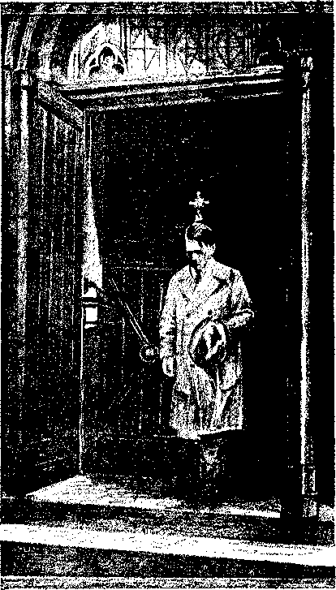

Contents
Engi and Aflame with Catholic Anarchy
Why Assault Jehovah’s witnesses?
Trinidad Tears Up the Magna Charta
All the World Wondering—As Foretold
A Result of Hitler's Jesuit Training
Religious Intolerance in South Africa
"Where the Conspiracy Was Hatched
Typical Naz.i-Vatican Conduct . ’
published ©very other Wednesday by
WATCHTOWER BIBLE AND TRACT SOCIETY, INC.
117 Adams St,, Brooklyn, N. Y., U. S, A.
Editor Clayton J. Woodworth
Business Ma racer Nathan H. Knorr
Five Cents a Copy
$1 a year in the United States
$L25 to Canada and all other countries
NOTICE TO SUBSCRIBERS
Remittances: For your own safety, remit by postal or express money order. When coin, or currency is Iori in the ordinary malls, there is no redress. Remittances from countries other than those named below may be made to the Brooklyn office, but only by international postal money order.
Receipt of a new or renewal subscription win ho acknowledged only when requested. Notice of Expiration is sent with the Journal one month before subscription expires. Please renew promptly to avoid loss of copies, Send change of address direct to us rather than to the post office. Your request should reach ur at least two weeks before the date of fseue with which it. Is to take effect. Send your old as well as the new address. Copies will not be forwarded by the post office to your new address unless extra postage Is provided by you.
Published also in Afrikaans, Bohemian, Danish, Dutch, Finnish, French, German, Greek, Hungarian, Japanese, Norwegian, Polish, Portuguese, Spanish., Swedish, Ukrainian; also special Australian edition In English.
OFFICES FOR OTHER COUNTRIES
England 84 Craven Terrace, London, W.^2
Canada 40 Irwin Avenue, Toronto 5, Ontario
Australia 7 Beresford Road, StrathQeld, N.S.W. South Africa 623 Boston House, Cape Town
Entered as second-class matter at Brooklyn, N* Y.» under the Act of March 3, 1379.
From a photograph of Hitler coming out of & Catholic Church,—In London Catholic Herald.
The May 5, 1939, issue of the London Catholic Herald contained a picture of Hitler coining out of a Catholic church (reproduced above) and a large part of the balance of the Herald was devoted to incitements to subjects of the pope to commit further assaults upon Jehovah’s witnesses, such as had already taken place at Clydebank, Folkestone, Camberiey, Oldham, Leicester, and London. ’
There may not' seem to be much connection ■ between the above picture and the article on Fascism in Britain. But after reading the ‘ article it will appear that the power back of Hitler is the same as that now fomenting violence against Jehovah’s witnesses in Britain.
“And in His name shall the nations hope.”—Matthew 12:21, A.R.V.
Volume XX
Brooklyn, ft Y», Wednesday* June 28, 1939
Number 516
L6t this fact be dearly borne in mind: This is not a cry for Jehovah’s witnesses. If they die in the performance of duty Jehovah will preserve their eternal existence. Whether one lives or dies is relatively unimportant; because the Devil’s agents can only kill the body but are unable to destroy the right to life. (Luke 12:4) Jehovah’s witnesses trust in the Lord and need nothing from any man. But the purpose here is to warn the people of good will that if they continue to uphold and support an organization that is fighting against God’s kingdom they will suffer the consequences of its destruction.
IN September, 1938, a timely warning was sounded from London, which message was transmitted by wire and wireless to the English-speaking people th rough out the earth. In. brief, that warning was this: Vatican City, directing its Hierarchy throughout the world and acting in conjunction with Fascists and Nazis, is in a conspiracy to grab con-' trol of and rule the world, regiment the people, and dictate arbitrarily to all.
The speaker on that occasion is not a . prophet, he does not claim to be, and no one claims for him that he is a prophet; he is merely one thor
Riots against God’s kingdom occurred in these towns
He is likewise thoroughly familiar with world affairs; and, taking together the Divine prophecies and the physical facts, he pointed out that this conspiracy is being advanced and that the entire conspiracy is the offspring of the Devil, and directed by the Devil and his wicked angels, the object being to oppose Jehovah God and His .kingdom.
Many thoughtful people thoroughly agreed, while many other^ tabooed the idea, and the Catholic press began 'a. severe onslaught and campaign of criticism against the speaker, resorting to all manner of lies. Conspicuous in this were the London
oughly familiar with the Scriptures, particularly with the prophecies written by holy men of old and which are recorded in the Bible.
Catholic Herald and Catholic Universe.
In recent months the development of the physical facts have shown not only that the whining was timely, but that the predicted events are coming to pass much quicker than many anticipated. The Catholic press and Catholic priests have incited and urged the benighted and ignorant parishioners of that religious-political organization to create a disturbance throughout England. Unable themselves to give any reasonable or Scriptural answer that would offset the warning concerning the encroachment of the Catholic-Fascist conspiracy, the Vatican and the other members of the Hierarchy have attempted to stir up strife, and even bloodshed.
England Aflame with Catholic Anarchy
At Glasgow, Clydebank, Oldham, Monmouthshire, Hebbum on Tyne, Folkestone, Camber ley, Leicester, Dundee, London and other places throughout Great Britain these disturbances have been so marked that the people of the nation are aroused and they see the great danger now threatening their government. Below we set out some of the facts, and from time to time this magazine will continue to publish the facts, to the end that the order-loving people of this land may be more fully advised.
Since the days of Napoleon the Catholics have somewhat taken a back seat, until 1929, when Mussolini restored the pope to temporal power by the Lateran Treaty signed February 11 of that year, and since then the Vatican has become more cocky, advocating and encouraging a war against Abyssinia, Spain, Japan against China, the grabbing of Austria, the wrecking of Czechoslovakia, and many other misdeeds too numerous to mention here. All of this unlawful and wicked prosecution of its purpose the Catholic press throughout the earth has nurtured and forwarded. Recent events in Australia, the Fiji Islands, Port of Spain, South Africa, and other places, show that a world-wide movement to wreck civilization to satisfy the ambition of the Vatican, the chief instrument of the Devil on earth, is being vigorously prosecuted, and the Roman Catholic Hierarchy and Fascists are working together.
In southern Wales Jehovah’s witnesses of the Abersychan company rented the Celynan Ambulance Hall at Newbridge, Monmouthshire, for the purpose of giving the people thereabouts an opportunity to hear Judge Rutherford’s speech “Fascism or Freedom”. In preparation for this meeting 3,000 leaflets were distributed inviting the public to attend. Everything was in order for an enlightening hour for the people when the Catholic-Fascists got busy. Had anything in the speech “Fascism or Freedom” been false these Catholics might have answered the charges like men and Britons; but knowing every word to be true, they were impelled to obstruct freedom of speech to prevent exposure. As to their methods, the words of the superintendent of the hall, who under pressure refused the hall to the Christians who had rented it, are significant. His statement follows:
On Friday evening the committee met to discuss your lecture and whether you could hold any further lectures. We decided that we would grant you one Sunday evening hut that we would not grant any further lectures, in view of what was contained in the leaflet. Following this discussion the Roman Catholic Priest (Rev, Father McDonor) paid me a visit. He suggested that this lecture should not be held because it was opposed to the Roman Catholic Church. Also he reminded us that the Roman Catholic Church were the big supporters of the Ambulance Brigade. Further that the medical instructors of the Brigade were Catholics and it would be a great loss to the Brigade if Catholic support was withdrawn from us. As a result of this visit we had a committee meeting and decided in view of these things to cancel your lecture.— D. Williams, 73 Springfield, Newbridge.
This is the condition of freedom in Newbridge.
In Hebburn on Tyne, a suburb of New Castle, with a similar desire to bring vital information to the attention of the people, a hall was engaged for the lecture “Fascism or Freedom”. Messrs. Popay, Cooper and Foster, trustees of the hall and non-Catholics, yielded to Papal pressure. A verbatim account follows:
After Jehovah’s witnesses began to push forward their advertising campaign in their regular style with information marches, sound-ears and folders, the local Catholic priest, Rev. Fr. Witty, got excited and took steps to stop this meeting. It is evident from reliable source that this reverend gentleman (7) called on the police on the day before the meeting and gave them some kind of an idea that there might be trouble at this meeting. Shortly after midnight on Saturday the police of Hebbum sent for the secretary of the hall, Mr. Tallack, and told him that he had better keep the doors locked on the morrow and refuse Jehovah’s witnesses entrance, as they (the police) could not give sufficient protection in view of the threatened disturbances. This was the first time anything was heard of a possible disturbance. With this information the trustees of the hall decided to break their contract and posted a sign on the door of their hall Sunday notifying the public that the meeting was canceled.
It also seems that this same priest on Saturday evening Warned his flock at a service to stop Jehovah’s witnesses and their meeting. On Sunday morning, when Jehovah’s witnesses began to witness to the people in the usual way there were groups of Catholics standing about the street corners lying in wait. All during Sunday morning the publishers of the Kingdom were harassed and ill-treated by these small groups. Stones were thrown at them and also at their ears. Abusive language was used by women who followed the publishers from house to house. They also booed the information marches and stoned the sound-ear. After the notice of the canceling of the meeting had been posted on the hall Sunday morning, groups of Catholics got together shouting “We’ve won, we’ve won”. At the time of the scheduled meeting the witnesses gathered in front of the hall and made appointments to call on all the people of good wjll who had come to hear this important lecture. -
Report of assaults of May 19, 1939:
The battle gets hotter every day up here, and so I have to report more assaults in the witness work. Twelve witnesses (mostly pioneers) were assaulted, including an old man of 70-odd yjars. ... On Friday evening, May 19, there was what has been described to me by outsiders as the biggest disturbance ever witnessed in the Garngad district of Glasgow. The twelve publishers were distributing the Clydebank leaflet and Face the Facts and Fascism or Freedom booklets, when almost with. out warning several mobs eaeh made up of hundreds strong started molesting and assaulting the publishers.
Some were pushed down stairs or rather flung down, their literature stolen, their head-gear thrown away, pulled along the street by' the hair, hammered continuously on the head and body, kicked constantly on the back and legs as they tried to reach a point for transport. Stones, bottles and every other thing within reach were thrown, some even having horse manure pushed down their backs. From an outside source (those not Jw’s) I am ^informed that some in the crowds had old swords and heavy sticks, to kill if they got the chance.
Police sent several constables into the district, but these got stoned also, and,were unable to do anything in the way of arresting anyone. Traffic was held up as the mobs entirely blocked the roads. It was a Seething mass of angry humanity, y el Ting, booing and shouting, and not until the drivers and conductors of the tramears that had been held up came to the rescue of the publishers were they able to get away. - ■ .
I am told that when the mobs got together in JUNE 28, 1939
the main street there would be 'about 2,000 all together. You can imagine the difficulty of getting to the tramcar with such crowds around. The police were throwing the people about like balls trying to reach the witnesses.
Further in regard to the riots in Glasgow, Henry Carmichael, one of five mobbed at Garngad Road, Friday evening, May 19, makes a statement :
Five of ns went to Cobden Street. Everything was peaceful and we were well received. We were unaware of any trouble in the district. We had finished a close [Scottish apartment house] in Charles Street, when at the foot of the close several women came rushing down, “Tell that man to get out for his life—there is trouble, A man and a woman have been assaulted and taken away in a tramear.” I was disturbed—didn’t know where to go. Elizabeth MoeCkel (German refugee pioneer) and I decided to go down to Garngad Road. We found a huge mob there. I saw two policemen; we put ourselves in their protection, I told the policemen there had been other assaults. They walked with us to Bright Street. A huge howl went up when the people saw us—the mob surged towards us. I never in my life saw such a frenzied mob. The scenes at Clydebank were child’s play compared with this. Stones and sticks were flung; dung was pushed down my neck. The policemen were helpless in the face of the mob—they were getting stones thrown at them also. The policemen were much more afraid of the mob than we were. These policemen took us up Bright Street to Charles Street-—walked along to Turner Street. There the policemen left'us, told us to beat it to Castle Street and get out of the district. Elizabeth and I went along Charles Street, the mob still following, throwing stones, beating and kicking us with their feet, pulling at Elizabeth’s coat and trying to tear away, her bag. That continued all the way along Charles Street, nearly half a.mile long. At Castle Street another mob came up Garngad Road (turned back after losing Mrs. Kilpatrick) hundreds strong. At. first we didn’t know what to do. There was no transport in sight. At last I saw a tram and we tried to get it. Several youths started battering me and punching me as I tried to get tb the tram. Several women attacked Elizabeth at this time, pulling her hair, and trying to knock her on the ground, kicking and punching. The crowd had brought the tram to a standstill. The driver and conductor and another man came off the car and endeavored to help us;.also two policemen were fighting their way through the crowd to reach, us.. By this time I had half got on and pulled. Elizabeth on; women were pulling her off, but a man in the tram helped me to pull her on. Then the two policemen struggled on and the tram started.
Statement by Mrs. 51. Kilpatrick
Witnesses Geo. Calder, Hendre Carmichael, J. Walker, McGee, Kilpatrick, Elisabeth Moeckel, Robson, Mary Kilpatrick, M. Henderson, Turner, senior, Jessie Turner, Mattie King, met at Garn gad Road and Castle Street and started work in Cobden Street and Bright Street. ,
Soon after we started Jessie Turner came running to me asking me to get the police, as a mob was assaulting -their party. I went straight to a police box, burst the emergency bell and shouted / “Please send police at once to Villers Street. Come at once; Jehovah’s witnesses are being assaulted”. When I turned to come out of the box there was a great mob round me, probably three hundred. I went down Villers Street towards^Castle Street looking for a policeman. All the way the mob kept battering me on the head with their fists, kicking me and shouting at me in the most dreadful language. They kept saying, “Just see what we’ll do to you for coming here saying tilings against the pope.” Two young women with babies in their arms, who seemed to be the ringleaders of the mob, ' threw their babies to two other women and joined the battering and punching. By this time the mob was from 300 to 600 strong, of men, women and children. ’ -
I came to the tram line and, by entering the front of the tram, managed to get separated from the mob. I took the number of the car, and the conductor said he was willing to be a witness to my assault. The number of the tramcar is 633 from Crookston to Renfleld Street, Route No. 21. I believe the number on the conductor's cap was 685. Both driver and conductor saw the actual battering which I got. The mob held the car up and two other cars. This car took me to Castle Street, where I saw two policemen. I came off and reported the , assault fully to these policemen. I gave these policemen Who Shall Rule the world Face the Facts, and the Clydebank leaflet, and a small leaflet with addresses of the Glasgow Kingdom Halls, They said there was nothing they could do.
■ The Dundee representative of the Watch Tower Bible and Tract Society in eastern Scotland reports Catholic interference and thwarting of an assembly to hear the “Fascism or Freedom” lecture in that fair city on the Firth of Tay. He said:
' On Wednesday evening of May 17 the Dundee company of Jehovah’s witnesses arranged for a public lecture, “Fascism or Freedom,” in a billiard saloon whieh has been used on previous occasions. The threescore witnesses in this very active company conducted information marches, made a wide distribution of handbills from house to house, and used their sound-cars to thoroughly inform the people of this important lecture by Judge Rutherford.
On the evening prior to the lecture the proprietor
of the hall was approached by a number of Cath. clics who are frequenters of the saloon. As a re' suit of their attitude and intimidation the proprie
tor decided to cancel the letting. He was also ap- " proaehed by a police constable who enquired the nature of the proposed meeting and suggested that trouble was likely to occur. This is another evidence of the growing move of the Catholic-Fascist power in this country whieh is out to bully and intimidate men of other persuasions to do their bidding.
Northwich Hall Canceled
15 Minnies Before Meeting
For a long time the Labor party is said to have stood for principles of fair play and the right of the freedom of peaceable assembly. But in these days of the growing move of Fascism in Britain, there are signs of Labor also yielding to such pressure.
In years gone by Jehovah’s witnesses have many times engaged the Labor Hall on Tabley Street in Northwich, Cheshire, 25 miles from Liverpool. This hall had been used for many public Bible lectures by Judge Rutherford even as had been arranged for Sunday evening, May 14, when this famous anti-Fascist lecture “Fascism or Freedom” was scheduled to be given by electrical transcription.
Jehovah’s witnesses had spent a busy week prior in thoroughly advertising this important occasion for the town of Northwich, Over five thousand invitations had been left with the people, and several information marches were held in the main center of the town. Then Sunday evening, just fifteen minutes before the lecture was to begin, the caretaker of the Labor Hall informed Jehovah’s witnesses that their lecture was banned arid that their contract for the hall was canceled. When pressed for reasons the management of the hall and the secretary,' F. Whitty, said they had received letters from various Catholics objecting to the meeting. There were also threats of trouble. However, Jehovah’s witnesses were not outdone; they held an open-air meeting near the Labor Hall and gave the entire “Fascism or Freedom” lecture to an appreciative audience. Truly every day bears further evidence of the growth of Catholic-Fascist action in Britain., As the Catholic Herald said on May 12, “There is a growing sense that Catholicity in Great Britain is on the eve of great happenings.” '
Report from Oldham
I am confident that a work is being accomplished by the distribution of the leaflet, and whilst there
are those who are. glad for selfish reasons to see ^the Catholic system exposed, yet there are many others who are glad to see truth made known for higher reasons. I am confident that we have many friends and the distribution of the leaflet is bringing them to light. Many are glad that there is an organization hold and courageous enough to expose a system having such power in the earth. At tonight's meeting a stranger came to Kingdom Hall for a few of the leaflets to give to friends, etc.; he had been asked for them and he said he would try to get some. He too sees the menace of Catholic-Fascist action and he is glad of the stand we have taken.
Wfto Incited the Riots?1
There are still many people suffering under the delusion that the Roman Catholic Church is a fine thing, Hundreds of millions of people have entrusted their spiritual- welfare to the Roman Catholic Church. To such let it here be stated that your confidence has been abused and your trust misplaced. If the Catholic organization is in reality a good thing and at all worthy of the Lord’s name, which it claims, why does it indulge in the effort to murder Christians simply because they have views different from their own? Do the good Catholics of the earth think it will enhance the merit of the Church ■ or augment its honor to violently attack people who are striving to assist others to understand the Bible, in fact doing exactly what they should be doing themselves? Is it not time that some of the honor-loving Catholics come forward with the suggestion that the Hierarchy, priests and Church leaders would serve the honor of the organization better by condemning mob violence rather than by inciting it? Is there any man of the British Isles cherishing the principles of liberty fought for by English, Irish and Scotchmen who approves beating up another simply because he has different views on the Bible from your own?
Are not the Roman Catholic priests and press of Britain who have incited the ignorant to riot guilty of the crime even more so than the ignorant? Is it the business of a church leader to organize his flock into a mob lusting for blood simply to appease. Rome’s desire to keep the people from hearing the truth? How does one who thus outrages all decency, whether he wears a black coat or lace ruffles or what have you, differ from any other blood-guilty criminal ? When a man dishonors a uniform he should not be permitted to hide behind it.
“Let the Buyer Beware”
It is time past-due for the good people numbering millions who support the Roman Catholic Church to ask themselves what they are buying. Let them propound the questions in thoughtful self-examination: Did I examine before I purchased? Was the principle of established business code “Let the buyer beware” pursued with regard to my religious affiliations? Is it not folly and courting disaster to accept what man has to say, whether priest or otherwise, simply on his unsupported word, without the backing of Scriptural authority or proof, knowing full well that I am thereby aiding one who stoops to attempt to murder? Do I favor the killing of Catholics by Catholics in Spain simply because it is decreed by a man ? and do I desire English Catholics to presently fight Nazi Catholics at the instance of the organization I am supporting? Is it the part of wisdom to dismiss the matter from mind by paying for a few masses or prayers as may have been traditional in my family as a Catholic?
Motives of the Hierarchy
There is scarcely an intelligent man who accepts without critical examination any statement made by another. It is therefore proper to consider the motive of the Roman Catholic Hierarchy as well as the facts. Within the British Commonwealth of Nations and the United States are found the greater portion of the liberty-lovers of the earth. Their allegiance to flag and country is based upon the traditional stand that the Scotch, Irish, English and Americans, all of common forebears,
7 have made for the cherished possession of liberty. Their land stands for their rights to enjoy life, liberty and the unmolested pursuit of happiness. Now it is certain that many within those countries where freedom has been so greatly loved and dearly bought have not applied the principle of “Let the buyer beware” to their religion, because the English-speaking countries greatly support the Roman Catholic Church and the Roman Catholic Church is file enemy of liberty.
This is the fact which the pages of history painfully corroborate. Let the people aforementioned recall the scourging wrath of Mary I, who strove to convert-the kingdom to God and the pope; the horrors perpetrated upon France by the pope’s niece Catherine de Medici; the ravages of the Inquisition, which has been reproduced in modern times by the Catholics Hitler, Mussolini and Franco; and let the free-born man of any country under the sun ask himself one question: Has Catholicism or any of its sons ever stood for right and freedom and received the sanction of the church? Has the church ever favored democracy or freedom in any form? Let any Catholic find some encyclical or pontifical utterance which promoted liberty and was reflected in an action for liberty. In fifteen hundred years of existence, had this organization any policy of liberty, it would have been expressed. Obviously it has none; it is the very antithesis of freedom: a dictatorial and tyrannical power inimical to every democracy under the sun.
Why, then, is it supported by the people of the democracies? Chiefly because it has built up a superstitious aura of influence founded Upon the tradition of men and supported by the Devil to dishonor God’s name. You who support the Roman Catholic church, consider what you have bought, not because such consideration will help Jehovah’s witnesses, but in order that you may save your good money and eventually save your lives. Does not everyone attach some importance to his money, and more to his life? If you are a Catholic and care nothing for your money, the same cannot be said for the church which you support. TAe Reader’s Digest points out that in' Germany alone the church owns twenty billion dollars’ worth of property. If the church had eared nothing for this money it could have found plenty .of needy Gathoiies in Spain and elsewhere upon whom to unburden itself. The church loves money, and boasts of its wealth.
■ B
Do You Want to Live? ,
- The consideration of the lives of the Catholic population is vastly more important, however. Does anyone who believes in the true God, who promised the people truth without money and without price, who owns the earth, would stoop to an arrangement whereby a few princes of the Catholic church would enrich themselves at the expense of the others affiliated in some way with the church, find this God would do in order to persuade himself to shorten the duration in “purgatory” of wretched men ? The traditions of men, and not the Scriptures, are the basis for such blasphemous falsehood.
Four hundred years ago Martin Luther proved that “purgatory” was not taught in the Bible; and today, if any still believe that Catholicism is supported by the Scriptures, let them read a Bible treatise called “Uncovered” written by the faithful Bible exponent, Judge Rutherford. -
You freedom-loving peoples of earth, you have bought neither bread nor freedom, nor your lives, by supporting the Roman Catholic church. The nation of Spain has recently bought & brand-new Catholic system; they paid a dear price: a few hundred thousand lives, most of whom were Catholics, the gutting of their treasury, and every vestige of freedom.
The Hierarchy always seems fortunate enough to find just the right man to do any zealous bit of murdering that the case seems to call for. Take Franco, for instance. His first official act when he captured Barcelona was the celebration of a public mass; it follows, of course, the Fascist army was there, joining in the ceremony, because General Franco does not entertain any opinion con- > trary to the pope’s. One of his mottoes is: “Dead men have no criticism against the Fascist government.” And he is delighting the pope’s heart by converting to Catholicism or to death, in either case a victory for Rome. Is it any wonder that the pope thanked his god, the Devil, when Franco took over ? -
Franco the Butcher
Note what a thorough-going job Franco is doing. The New York Times of May 27, 1939, carries this account:
688 Executed by Franco Stnc© March 28;
1,200,000 Accused Are Being Tried 380 a Day . By Th© Associated Press,
MADRID, May 26.—It was officially announced tonight that the Nationalists’ specially constituted
CONSOLATION
councils of war and permanent military tribunals had sent 688 persons before firing squads since the fall of Madrid on March 28.
The councils, formed by officers of the Madrid army of occupation, condemned 1,000 persons to death, but the sentences of 312 of them were commuted to prison terms by Generalissimo Francisco Franco.
Officials of the military tribunals said in disclosing the figures that daily trials contributing to “the total normalization of the life of the nation” were “indispensable for initiation of the second era of empire.”
Tribunals in Madrid have been trying daily 380 persons accused of assassinations, robberies, burning and sacking of churches, treason, imprisonment of Nationalist sympathizers and other activities during the time when the Republicans dominated the city.
The number condemned includes those sentenced by councils of war operating in Toledo, Ciudad Real and Albacete in addition to Madrid. A roundup of suspected criminals in all newly incorporated zones is continuing under direction of military authorities.
The latest number awaiting trial in Madrid was not announced, but it was officially disclosed less than a month ago that there were 46,000 scheduled to face the tribunals and 1,200,000 informations filed against suspects in all Spain.
Showing the absolute accord between pope, Fascist and Nazi, note this dispatch in the same paper:
VIGO, Spain, May 26 (A.P.).—The German Condor Legion of about 6,000 men who fought in the Spanish civil war sailed for Hamburg today aboard five German liners.
General Juan Yague, Jose Solchaga, Miguel Aranda and six other Spanish Nationalist military leaders were aboard the steamer Robert Ley, which led the four other liners out of Vigo harbor, escorted by more than 100 fishing vessels. The Spaniards were invited to Germany to see the Condor Legion parade before Chancellor Adolf Hitler in Berlin on June 6.
Forty-five officers of the Spanish Nationalist Air Force also were aboard for a trip to Germany.
Franco has no doubt heard of Thomas Tor-quemada, Inquisitor General of Spain during the reign of Ferdinand and Isabella, a time when Europeans were just beginning to emigrate to America to escape the Catholic Inquisition. It is recorded in the Encyclopaedia Britannica that Torquemada killed only 10,000 “heretics” by rack, stake and torture chamber in the name of the pope; whereas Franco already has several hundred thousand start on Torquemada, and, with a million yet to be tried, it looks as if Franco ought to have up a permanent record. This is real eause for the
Hierarchy to rub their hands in anticipation.
A Catholic paper of recent date says that the Irish, those we have come to respect in America as the “fighting Irish”, are to be called on to fill in the gaps in |the' priesthood in ravaged Spain. Have enough Irishmen become so tainted by their associating with the Roman Catholic Hierarchy that they are will. ing to undertake the work of helping Franco kill another million Spaniards? It does not sound like a job worthy of the charming people of the Emerald Isle. And it seems incredible that the experience of General O’Duffy’s Irish Brigade in the Spanish Civil War could have been so quickly and so completely forgotten.
Why Assault Jehovah’s witnesses?
To return to the attackers of Jehovah’s witnesses. In brief the motives of these agents of the Hierarchy are here impugned: their.purpose is quite evidently to discredit the words of a speaker who is too clearly factual; to cloud in the minds of the ignorant or innocent any exposure of the Hierarchy in true character, that of one who is blood-drunk, who does not want her evil discovered, so that she may . continue to drink the blood of innocents and devour the nations of earth. “Also in thy skirts is found the blood of the souls of the poor innocents; I have not found it by secret search, but upon all these.”—Jeremiah 2:34.
What, on the other hand, is the motive for Jehovah’s witnesses?2 They have nothing to gain, no gigantic fabulous wealth that is endangered by simple truth, no need for armies to destroy the lives of thousands that selfish religious rulers might continue in power. Jehovah’s witnesses are commanded to tell th< truth (Isaiah 43) ; and it does hot matter in the least whether anyone listens or not, as far as the result to them, is concerned, “ And speak unto them, and tell them, Thus saith the Lord God; whether they will hear, or whether they ■will forbear.”—Ezekiel 3:11.
Jehovah’s witnesses, in obedience to the Most High, are crying out to you honest and fair-minded peoples of earth to save your-’ selves. If one chooses to believe agents of the Hierarchy, in spite of the facts, he will be the loser, and not those he condemns; and as the Hierarchy gains more power in the earth, because the Lord has decreed that she be entrapped in the fullness of power, the cries of Jehovah’s witnesses will likely be silenced for a time. Then the people will learn too late that these spoke in kindness and in obedience to Jehovah of Hosts. In the fullness of power the Hierarchy will be taken and all who give allegiance to her. This is Jehovah’s just decree against the abomination that desolates Europe and the whole earth.
Unable to answer the Scriptural proof set forth by Judge Rutherford in his address on “Face the Facts”, and on “Fascism or Freedom”, wdiieh are now being distributed throughout this country, the Catholic Press of London has made and continues to make many scurrilous, false and libelous charges against Judge Rutherford. We are not interested in this. We are not here defending Judge Rutherford. He needs no defense. Every person who knows him is fully convinced that he is sincerely devoted to Jehovah God and His kingdom. Whether he served a short time or a long time as circuit judge, or whether he was a junk dealer, is beside the question. That throws no light whatsoever upon God’s Word. Judge Rutherford is bringing to the people the message of God’s Word. It is not a man’s message, but the Lord’s message, and every honest and sincere person is able to see the truth thereof without the aid of Jesuit priests. No one can truly charge Judge Rutherford with doing wrong. That much cannot be truthfully said about very many Catholic priests. Judge Rutherford left the law to devote himself, and is wholly devoting himself and all his energies, to the service of Jehovah God and His kingdom, and in aiding the people to understand the Bible, that they might flee to the only place of refuge, safety and life.
That much could not be said for any Roman Catholic priest under the sun. Judge Rutherford is aiding the people to understand the Bible, while the Catholic priests are doing all within their power to throw dust in the eyes of the people and to prevent them from knowing what is in the Bible. For this reason honest Catholics are rapidly fleeing from the Catholic domination; and that greatly enrages the Hierarchy.
Sincere Catholic people see that in the Vatican there is no hope held out for them; <ind seeing the truth, they learn that their only hope is in God’s kingdom. Sincere Catholics have been fleeced of their hard-earned money by the agents of the Vatican who regularly go about collecting from laboring men and others their hard-earned money. Jehovah’s witnesses go from door to door to encourage, aid and comfort the people to see and to understand how they may obtain blessings from the Lord. This they do ’without compensation to themselves. The contrast between Jehovah’s witnesses and the Hierarchy agents is so marked that honest people everywhere are seeing their privilege of getting away from the Hierarchy domination. This truly is the time in which the scripture at Matthew 25: 31-46 is being fulfilled. Christ Jesus, acting by and through His representatives whom He sends throughout the earth, is dividing the people, putting the “goats” on one side and the “sheep” on the other; and the flock of “goats” is made up of the Hierarchy chiefly, and those who support them are also “goats”. The “sheep” are those who are willing to be led and taught the truth, and this regardless of whether they have been Catholics, Church of England Episcopalians, Wesleyan Methodists, or anybody else.
This magazine could take up many pages in naming and extolling the virtues of Judge Rutherford, who is laying down his life in the interest of the people; but this is not necessary. It neither adds any glory to the Lord nor brings any comfort to the people and he does not wish this to be done. Forget the man and look at the message, and then decide for yourself whether you wish to he fleeced by these commercial-“purgatory” agents who wrongfully collect money from the people, or whether you want to learn the truth and find the way to life everlasting in peace and happiness. The Catholic organization is a political organization, determined to rule or ruin the peo-
pie; and it is certainly ruining them. The Lord’s organization is the only organization in existence that holds out eqmfort and aid to the people; and that organization is headed by the Lord Jesus Christ, now present, and who is putting in operation Uis kingdom, and who will soon destroy all opposition, that peace, prosperity and life may result to those who love and serve Him. But have this in mind: that only those who become the servants of Jehovah’5 God, who refuse to follow any man or any man-made organization, will be the ones that receive lasting benefit. Shun religion, and serve Christ Jesus the King.
Wages of British Postal Employees
♦ The wages of British postal employees have just been raised, and still seem very meager. Postmen in Inner London may rise to a maximum of 75 shillings a week, which is around ''$18.25 per week. An American postman at $175 per month gets around $40 per week, but rents and other living expenses are much less in Britain than here.
Trains Delayed by Seaweed
♦ It is surely an odd circumstance that electric trains were delayed by seaweed, but it happened in London. So much seaweed backed up in the Thames that it choked the water supply in one of the electric generating stations. That reduced the steam supply and ippde it necessary for 20 minutes to cut down the speed of the trains.
Cash for Mental Patients
♦ Experiments on the Isle of Wight with mental patients on probation shows that they dre much benefited by being entrusted with small sums of money. The jingling of coins in their pockets gives them a sense of independence and acts as a.” mental restorative.' The experiment is proving a wonderful success.
Fascism in Kendal, England
♦ In Kendal, England, a Fascist chief of police ordered that an attendant be posted at the exit of each cinema, so that at the conclusion of each show no one may leave until the national anthem is played. The rule is stfictly enforced, and thus, little by little, Fascism comes to Britain. .
Color Bar in Britain
♦ Britain has few colored persons. Occasionally representative visitors come from Africa and other colonial possession. These are frequently treated in such a way as to return to where they came from wdth less love for the empire than they had before. -
JUNE 28, 1939
Open Idolatry in Britain
♦ At Cerne Abbas, Dorset, England, is a statue cut out of the hillside in pagan times known as the Cerne giant. Many will be astonished to learn that in front of this giant statue, commonly called ‘The love god”, British girls have been worshiping every year for centuries. After darkness they come and pray him to send them a sweetheart, and young wives come and plead for children. This, in England!
Saved Twelve Lives by Being Late
♦ At Lount colliery, Leicester, England, twelve men were about to go down a deep shaft when it was discovered that one of the twelve was a few moments late. The first trip down, therefore, the cage was sent down with mining equipment instead of men. It broke away and dropped several hundred feet to the bottom. Had the men been aboard all would certainly have been killed.
i
British Post Office
♦ The British Post Office is supposed to be making money, even though the country is virtually bankrupt.
The average surplus of the British Post Office for the past five years exceeded’ £12,000,000. Wages paid to postal workers are low, seldom reaching £5 a week, with most of them much below that figure.
Burglars of 14
♦ It was Mark Twain that said that every boy should be kept ip a barrel and fed through the bunghole until be is 14 and then the bung- y hole should be closed. It seems they must be, thinking something like that in Britain since they discovered that of the 9,881 persons found guilty in 1937 of breaking and entering 39 percent were under 14 years of age.
SOLICITUDE for those who hate the Magna Charta is not amusing or pathetic. It is criminal, disgusting, cowardly and contemptible. Ip the island of Trinidad, British West Indies, there are Hindus, Mohammedans, Presbyterians, Episcopalians, Methodists and Roman Catholics, The latter believe and openly teach that they alone have the right to teach, and that it is right for them, if they can do so, to suppress by any means whatever those who teach differently, There are also a few Christians, called Jehovah’s witnesses. The latter are singular and peculiar because they not only profess to believe the Bible, but do believe it.
To the house of fulsome tragedies
The government of Trinidad is solicitous for one of the groups above named. Which of these groups, do you imagine, is the object of its paternal care? Can it be that it is solicitous for the good name and fame of the religion of Edward VIII, married of late by a clergyman of the Church of England? Of course not. Britain is the land of .the Magna Charta and believes in free speech and fair play, or at least it did and no politician in any of its colonies would stoop to defend the Church of England by underhand methods.
But the Government of Trinidad is so deeply moved for the interests of one of the groups above mentioned that it “devised mischief by a law” which prohibits admission into the colony of Bibles if printed by the Watchtower Bible and Tract Society, hooks explaining the Bible if printed by the same Society, and song books containing hymns of praise to the Creator if published by the same.
In whose interest, pray, is all this paternal care exercised? Is it for the Hindus? No7they
12
may still worship their idols, believe what they like and teach it to others. Is it for the Mohammedans ? No; they may still look forward to an eternity spent in the arms of the houris, the black-eyed and beautiful nymphs of paradise, and the men, at least, can work for converts as they will. Is it for the Presbyterians? No; they may still teach that they are elect, set apart for.eternal mercies, while Others are set apart for climates hotter than Trinidad. Is it for the Methodists, who believe the results will be the same as by the Presbyterian system, but. that the Creator does the best He can to prevent it? No; they still have the right to teach what they wish.
Ah 1 there is one group left. Can it be possible that the politicians of Trinidad are deeply moved for the Roman Catholic Hierarchy because they and their followers are few, and, despite the oft-repeated and extravagant claims of what they would do to their fellow men if only they had the power, these politicians wish to make sure that no harm can come to them until they commit some overt acts? Yes, and no! The solicitude is for the Hierarchy and its following, hut it is not because they are few, but, according to the politicians, it is because there are so many in Trinidad. That is why the Christians, Jehovah’s witnesses, must, so the politicians say, be deprived of their privilege of reading or circulating their Bible literature.
How would you like to live in a place where those who at heart are evil and wicked, and openly confess it in their public statements, are protected by politicians at the expense of the taxpayers, and Christians are deprived.of their most elementary rights? Such is Trinidad.
consolation
KJCHTEOUS . ' .
The Deflation of Justice Hart
♦ Irondequoit is a town in Monroe county, state of New York. Its justice of the peace is Arthur L. Hart. As such justice he is quite an important personage. He has the power to pass on questions of law and fact, and is empowered to levy fines and to impose prison sentences against those brought before him charged with crime.
Jehovah’s Kingdom publishers’ information march, Orlando, Florida
Sometimes a little power has a bad effect upon the minds of people. It causes an ove r e s timation o f their position in relation to the rest of the families of the earth. The story of Justice of the Peace Hart’s overvaluation of himself and of its deflation is here told for the delectation of Consolation readers.
On December 12 last, one of Jehovah’s witnesses, Mary Guthrie, a pioneer publisher, visited residents of Irondequoit at their homes. While so engaged she called upon Florence Donoghue. Never mind guessing Mrs. Donoghue’s church. She announces it for herself. She listened to a Biblical record played on Mrs. Guthrie’s phonograph, and then emphatically stated, “I am a Catholic.” She thereupon demonstrated clearly the Catholic mode of objecting to Bible lectures by shaking her fist, storming around, and ordering the pioneer publisher off the porch.
Picking up the phonograph, the publisher departed. The matter should have ended right there. It would have been better for Mrs. Donoghue and Justice of the Peace Hart if it had. But the shocked condition of Mrs. Donoghue’s Papalistie susceptibilities impelled her to further action. She went to Justice Hart and swore to an information in which it was charged that Mary Guthrie “annoyed, disturbed, interfered with, and was offensive to her” by "starting to play a phonograph” and “trying to sell religious leaflets”. Thereupon the officers of the law sallied forth, and in due course of time Mary Guthrie was brought before Arthur L, Hart, justice of the peace, and tried upon the charges stated in Mrs. Donoghue’s information.
There was no evidence that the accused one had violated any law. It was true that she did play a phonograph record containing a Bible lecture. It was true that she did present some Bible leaflets to Mrs. Donoghue. But it is not against the law to do those things. Nevertheless, Justice Hart made full use of the powers given to him by law and found the defendant guilty of the offense charged. He thereupon levied a fine of ten dollars against her, plus a sentence of ten days in the Monroe County Penitentiary. He suspended the penitentiary sentence, however, upon condition that the defendant “stay out of Irondequoit hereafter”. That, fellow democrats, is some judicial pronunciamento. It brings to light and manifests the evil effects of that well-known disease which may be designated “bloating of the cranium”. This local justice seems to be afflicted with the final stages of that disease, and therefore imagines that he is as big a man as “I-am-the-law” Hague, of Jersey City.
In accordance with Hart’s finding and judgment, the defendant, a God-fearing, Christian woman, must stay out of Irondequoit thenceforth, thereafter and forevermore. She is persona non grata on streets and sidewalks, in hotels, restaurants, business places, residences, and in all other portions of the town. She is excommunicated, banished and exiled. Ten days in jail await her any time she returns. No judicial precedent is cited as authority for this autocratic, imperious decree. It came from the inflated mental recesses of the town’s justice of the peace, unsupported by statute, ordinance, edict, rubric or maxim; and undoubtedly it brought great comfort and peace of mind to Florence Donoghue and others of like mind.
But their joy was short-lived. 7 ’
JUNE 28, 1939
13
Some of the thousand listeners to a transcription lecture
Mary Guthrie, through her attorneys, took an appeal to the Monroe County court, where, after due argument and the filing of briefs, the county judge entered a decision reversing the judgment of the Honorable Justice of the Peace Arthur L. Hart and setting aside the conviction. Thereupon now, henceforth and for evermore Mary Guthrie may walk the streets of Irondequoit unmolested and without fear of incarceration ; and His Honor, the justice of the peace of the community, will, in mental structure, decline, abate and subside to the usual condition, size and temperature of the normal human person.
Texas Boy with a Conscience
♦ The world needs nothing human so much as it needs boys and girls with consciences like those of Daniel, Shadrach, Meshach and Abed-nego. There are many such among the children of Jehovah’s witnesses. Having heard the truth all their lives, and seen their parents live it, the children want to live it too.
Texas has many such boys. God bless every one of them. Noel is one of them, age 11. He did .not want to sing patriotic songs if there is anything about war in them. He would sing the first two verses of one of the songs, but not the last one. He would not sing a song about ‘his soul taking its flight to God’. His dysire is to live forever on the earth. He did not wish to participate in Christmas celebrations. He had read of the origin of Christmas, in this magazine. He would not participate in a song that asked God to bless a new school building, its walls, windows, chimneys, doors, etc. He was sure such a song would not be in harmony with the Scriptures. His teachers so far have seen the point every time, and that shows that they are up to the highest standard of the American teaching tradition, and worthy of Noel’s love and respect, and he of theirs. The story leaked out in a letter.
The Battle in Jamaica
♦ The former mayor of Kingston, who caused Jehovah’s witnesses to be taken into court some time ago, is not re-elected. The new mayor gave us the privilege of delivering lectures in the Race Course for three nights. Over 1,500 persons heard the lectures, and much interest was shown. There are 105 phonographs in use in the work in the island; also seven portable transcription machines and two sound-ears, and, by God’s help, we expect to tan the old woman’s [Roman Catholic Hierarchy’s] hide.-—P. H. Davidson, Jamaica.
Joys of Kingdom Service
♦ Several years ago, while in Smithfield, I witnessed to one of the nicest persons I have ever met while delivering the message of truth,. This woman was very poor. She asked the price of the booklet and I told her I would let her have it on a contribution of five cents. She told me that she had no money, and they were too good to be given away for nothing. I told her that I would let her have it for nothing if she promised to read it. She refused the offer, so I bade her good day. As I started to the next house I noticed some beautiful elimbing roses in her yard. They were yellow and very large. I went back to the house and asked if she would let me have a few of those roses, and I in turn would give her a booklet; then the book would not be given awFay for nothing. This she was very glad to do. I had pretty yellow roses and she had the message of truth. I never have had a more interesting and pleasant experience than thia.—Patty Mahone, pupil in Gates Kingdom School, Pennsylvania.
Curtailing Freedom of Speech
♦ Because the Federal Council of Churches of Christ in America has remained silent while the Roman Hierarchy tried, every way to force Judge Rutherford off the air, it is with some interest that note is made of its public and Hypocritical statement:
In a democracy freedom of speech is a priceless possession. Xo administrative government agency is wise enough to he entrusted with power to determine what people shah hear. Freedom of radio is almost, if not quite, as important as freedom of the press. If either is curtailed, our political and religious liberties are imperiled. For this reason we believe any attempt to regulate utterances over the radio by an administrative government agency, except within canons of decency, propriety and public safety clearly defined by statute, is dangerous and contrary to public policy.
Tribute from an Honest Heart
Transcript mil setup in Plaza Park, Los Angelea
Mr. J.; F. Rutherford, _
Pres. Watch Tower and Tract Society, Brooklyn, N. Y.
Dear Mr. Rutherford—
I take this opportunity of writing you in ' behalf of the organization of Jehovah’s witnesses over which you are supervisor under the guidance of the Great Jehovah God, Creator, for the wonderful message that is being transmitted to the world of mankind. I am fully assured that you are carrying the greatest blessing to the distressed that has ever been preached since our Lord trod the paths of tribulation and distress here on earth.
It is surely a great work. I have had the opportunity of reading your many, many booklets on different subjects of discussion regarding the religious impostor groups that . call themselves leaders of Christianity, 'and your conception according to the Bible is straight, hard facts. I have long lost all respect for sueh bigotry and hypocrisy as is demonstrated by the deceitful clergy of all denominations, and feel that their day is doomed through the coming kingdom of Jehovah God, as there cannot be any hope for the world except through and by His arrangement of things. It is pitiful to witness what methods are being adopted by these satanic concerns in order to just stand a little longer. But the Light of Truth is gradually shining more and more until the dark corners will he rid of all the Cathedral Bats, and they will have to come out in the light and be censured by the Word of truth.
Your criticism of the Hierarchy, measured by the one Book, is surely commendable and, above all, is true. I firmly believe that the ' undercover methods of this organization have been the foundation or cause of millions of peoples of all nationalities to undergo great sufferings and deprivation.
Keep up the wonderful work, and may the Lord guide and direct all your efforts to the establishment of a government at peace and happiness throughout the suffering world, through His Son, the Redeemer.
Yours respectfully, Raymond McGhee, Virginia,
Providence Visitor
♦ The Providence Visitor, advocate of the highly intelligent (?) philosophy that anybody with the cash ean bribe Almighty God to let his friends out of a “purgatory” where they are being “roasted” to a sienna brown, is so good as to let its readers know that Jehovah’s witnesses are “walking psychopaths”. But it is sufficiently apprehensive of the fate of its racket to advise its readers that “common sense tells us not to argue with them”. That seems reasonable. Suppose now you had a fool racket, like “purgatory”, that had not a single leg to stand on, wouldn't it worry you, if the racket was a bear for bringing in the coin of the realm, if somebody would go around among your folks and tell them the plain truth ? If you were a priest, you would want to keep the cash coming just as long as possible.
(To &e continued')
JUNE 28, 1939
15
1
British Comment
By J. H emery (London)
General
• Conscription is now a definite factor of the Government’s rearmament policy. Its first victims are the young men between 20 and 21 years of age. No doubt, in deciding on that age the Government considered that the removal of the 300,000 who are liable to be called will cause less disturbance in the workshops and to professional occupations than there would be if older men were called up. It is a safe prophecy to say that it will not be long before there is a much wider fling of the conscription net, and later a general commandeering of the human power of the country and of all its resources. The voracious maw of the military, naval and air forces will be kept wide open; for the troubles which have brought on this thing will not be settled by talks and pacts or by any policy of appeasement. The Labor party is making its voice heard in Parliament in opposition to the Cabinet’s announced decision; but the Government has a majority which is ready to carry out the calls of the Cabinet, and the necessary act to make conscription a law of the land will be passed. The opposition of the Labor party, whether in or out of Parliament, does not mean that there will be concerted opposition after conscription is law: the party will not produce a great crop of conscientious objectors. Their position, with which many others agree, is that the government is not under the necessity of compelling men to join the forces; that the voluntary system is meeting the needs. Many of those who object to the Government’s Bill believe that the action of the Government is partly a party move, taking advantage of the present situation to further a policy which many have wanted to fasten on the people. Undoubtedly there are many supporters of the Government who are of the Fascist turn of mind.
A great cry about Mr. Chamberlain’s inconsistency is raised. It is only a short time since he declared conscription should not be introduced in peacetime, yet here it is in action. His answer is an easy one for a politician. He avers that in a very real sense the country is at war. Certainly the relationships of the European nations, including Britain, are' in a state of war. The guns are not shooting, but all the nations gre under the duress of war conditions, and no one knows, probably not Hitler himself, when he may be moved by his ‘‘controls” to take an action that will make the guns in all Europe blaze in action. The conditions which existed when Chamberlain spoke his promise no longer obtain: the tempo is quickening and threatens to get to fever pace. Opponents of the policy of the Government say, and probably with truth, that if Chamberlain had taken a different course the present1 serious conditions in which Britain is now involved would not have arisen and that there would have been no need for conscription. An editorial in Reynolds News, the organ of the Co-operative Societies, puts its statement on conscription very bluntly. Under the caption, “Conscription: a Step to Fascism,” it says: “Mussolini decides who shall fill the post of -Foreign Secretary [a reference to the dismissal of Mr, Eden from that office}. Hitler influences the appointment of the Ministry of Supply and the trend of British foreign policy. France and Poland drive us into conscription! This is the fate, under Mr. Chamberlain, of the free democracy of the world’s mightiest empire. ... he breaks his pledges to organized Labour . . . imports alien ideas to solve problems precipitated by his own incompetence.”
Consistency in keeping to one’s statements is not to be expected from a politician, for times and circumstances change • but it is not always easy to understand the attitude of these men towards their former actions and their very definite pronouncements. The London Star reminds its readers of some words of Sir John Simon, the chancellor of the exchequer, who is next to the premier in importance of office and is, of course, his supporter in his policy in conscription. The Star says, “Sir John Simon, on January 5, 1916, after resigning from the Government as a protest against conscription during the last war, said, ‘Do not pay Prussian militarism , the compliment of imitating the most hateful of its institutions.’ ” The country was then in the thick of the war, yet he resigned office rather than support this hateful thing, believing it was not necessary to the support of the Government’s need. But the Government . has entered into commitments with France
(Continued on page £&)- ■ ,
HERE are those who are properly called Jehovah’s witnesses. They are not religionists; for the reason, they do not practice
religion. They do not compose a sect, nor a denomination. Jehovah God being all-powerful and therefore fully able to carry out His purpose without assistance, why should He have witnesses on the earth at this time? For the purpose of declaring His name and notifying the people of His purpose, in order that the people of good will toward Him, and who desire righteousness, may know what to do; aiso that notice may. be served upon God’s . enemies that His purpose is to destroy them at Armageddon, which is near at hand. Satan, the Devil, has at all times taken the lead in opposition to Jehovah God. He declared that he could turn all men against Jehovah and that God could not put men on earth who under the test would remain faithful and true to the Almighty God. That challenge Jehovah accepted and said to Satan: fFor this cause have I permitted thee to remain, that I might show thee my power; and that my name may be declared throughout all the earth.’ (Exodus 9:16, Lesser) Jehovah there expressed His purpose to permit Satan to have full opportunity to carry out his wicked challenge, and God further stated that He would have His name declared throughout the earth immediately before destruction should (some upon Satan and his agents. That prophecy is now in course of fulfillment.
Who are Jehovah’s witnesses? The Lord Jesus Christ is the chief witness of Jehovah God, and He bears the title “The Faithful and True Witness”. (Revelation 3:14) In response to a question propounded to Him, Jesus announced that He was born and came into the world that He might bear witness to the truth and that the Word of Jehovah God is truth; therefore He is Jehovah’s Chief Witness. (John 18:37; 17:17) Jehovah had on the earth a few men who acted as His witnesses . and who testified concerning His name throughout the entire period of time from
JUNE 28, 1838
Abel to John the Baptist; and a list of such witnesses is set forth at Hebrews the eleventh chapter. With the disciples of Jesus Christ at -Pentecost God began the taking out from the nations “a people for his name” which people or persons are commissioned and sent out in the world to bear testimony to the name and purpose of the Almighty God and which persons are designated in the Scriptures by the name “Jehovah’s witnesses”. To those faithful ones devoted to Jehovah and His kingdom God specifically says: ‘Ye are my witnesses that I am God.’ (Isaiah 43:10,12) From the time of the apostles of Jesus Christ onward Jehovah had on earth some witnesses, all of whom are properly called Christians because they followed the lead of Christ Jesus, the Chief Witness. In that time many persons have professed to be Christians but instead have followed human leaders, relying upon the teachings of men, instead of relying upon the Bible, which contains the Word of God; hence such persons have followed and practiced religion. A religionist is not a witness for Jehovah, for the reason that religion is against God. The mass of the people who follow religion do so because they have been and are deceived by the Devil, the author of religion. It has been difficult for men to resist the temptation placed before them by the Devil in the fo^m of religion. Unless one follows closely the Word of God Ins is almost certain to fall into the religious trap of Satan, What persons on earth today are in fact Jehovah’s witnesses? Only those who are wholly and entirely devoted to Jehovah God and His kingdom. All such are Christians because Christ Jesus is God’s duly anointed King to rule the world; and those who are for His kingdom, and who follow Christ and proclaim the name of God, the great King of Eternity, are the witnesses to the name of Jehovah. The time for putting the kingdom of Jehovah in full control of the world is here. The Devil knows this, and he is desperately trying to turn all persons away from Jehovah, and he uses religion a's his chief means of accomplishing that purpose.
All true followers of Christ Jesus must be and are witnesses to the name and kingdom of the Almighty God, Jehovah, and hence are properly called Jehovah’s witnesses. All such must declare the name of Jehovah, which name carries with it the purpose of His kingdom. Associated with those whom God has taken out of the world as a people for Hjs name are
17
others who are designated by the Lord as ‘my other sheep’, that is to say, persons who are of good will toward God and His kingdom. These are otherwise mentioned as Jonadabs, and will form the great multitude. When such persons of good will hear the message of Jehovah’s kingdom they too join in the proclamation of His name and kingdom. They have learned that the only means of salvation is by and through Christ Jesus, the King, and that Jehovah God has provided such salvation for those that turp wholly to Him and His kingdom. They arc anxious to tell others about the purpose of Jehovah God, and hence they join in giving testimony to His name and to His kingdom.
* - According to reports, California
had dust storms recently, which
•> is rather unique for that western paradise. It also had a dust Storm
■KKKoS in Sacramento when the friends of Hitler, Mussolini, Franco and the Roman Catholic Hierarchy tried to put through a Fascist measure and got caught in the act. Some alleged details of the origin of this storm in the California legislature are contained in the following letter, but don’t take them too seriously. The Roman Hierarchy is too slick to stick its own fingers in the fire. There are always plenty of suckers ready to do its bidding. So why not the Elks, if the latter had anything to do with it? Fifteen hundred years of skillful political doublecrossing has taught the Hierarchy to keep out of sight when it wants to slip something over. But here is O’Donnell’s letter, for what it is worth, anyway. It is addressed to Roy Harvey, West Sacramento, and reads:
As you may know, there has been a barrage of correspondence on myself and most other members of the Legislature relative to Assembly Bill No. 343.
The authors of these thousands of letters are uniformly misinformed as to the origin of this bill known as the “Flag Salute” bill. Each letter uniformly asserts that the thought contained in the bill is promulgated by Fascists and the Roman Catholic Hierarchy.
I have investigated the matter personally and find the bill is sponsored by the Elks Imdge hero in Sacramento. I have also interviewed the members of the Assembly and. ean not find where any member has ever received any request by any member of the Catholic Chureh for the bill. I cannot speak for the Fascists as I am unable to find any such here.
I asked a Catholic priest for his opinion and he said that while he could see no objection to the bill, he could see no particular necessity for it. I consulted two school principals who voiced the same opinion except to add that patriotism could better be taught by education than by law.
The Sag is but the symbol of religious liberty. A salute is but the outward allegiance to that fundamental principle, attributing neither salvation nor worship. No legislation can, or will, abrogate or interfere with this sacred right.
Yours very truly,
John H. O’Donnell
O’Donnell Works the Bellows ,
♦ The wind that is to blow liberty out of California, and is to substitute totalitarian misrule in its place, is from the Devil. The bellows is the Roman Catholic Hierarchy. The -Elks are merely a convenient bellows nozzle. O’Donnell is merely blowing the bellows. He hides behind the 'refuge of lies.’.—Isaiah 28:15.
The Hierarchy having deliberately connived for the destruction of Ethiopia, the German , Republic, the Austrian Republic, the Czechoslovakian Republic, the Spanish Republic, and other centers of liberty, is determined to destroy the liberties of the American Republic, , and is embarrassed by the fact that there is still in this country a certain amount of states’ rights. So the fight must be carried into each state.
AH Mr. O’Donnell needs to do is,to look in the glass and say to himself,
Here is a man that believes that the Roman Catholic Chureh is God; that when he thinks of God and the institutions of his native land, his god (the god of this world, the Devil) comes first, and if it came fjo a showdown he would demand that (as on United States battleships) the pope’s flag should fly above the United States flag, and the poope’s will should he done in this country, first, last and all the time, regardless of the United States Constitution, laws, liberties or anything else.
It is impossible for any person to be a real Roman Catholic and an American patriot at the same time. He will say he is a patriot; any-, body can do that; and anybody but a real patriot can be'Torced to do'it. That is what this Hag-salute rumpus is all about. Those that
CONSOLATION
are not patriots are determined to force some kind of totalitarian submission down the hecks of the real ones, so that they can go ahead and turn the entire country over to those that receive their instruction from Vatican City,
Is it possible that Mr. O’Donnell does not know that in these flag-salute measures his gang have a wonderful chance to pose as patriots when they are nothing of the sort? It is not possible. He well knows that similar measures are afoot in every corner of the country and of the world. Rome is determined to grab control of the entire earth, to do it in the name of patriotism and to make it a hell for anybody that resists. Look at the newspapers, the movies and the radio, and see the sickening slop fed to the American people to try to make them think that their worst enemy is their best friend. O’Donnell helps.
O’Donnell thinks he is fooling Mr. Harvey and other sensible people of California. The difficulty is that he has fooled them once too often and got into the legislature and now thinks he can keep the job up by continuing to fool all the people all the time. He will probably lose out on that j.ob.
(In Three Parts—Part 2)
“And I saw one of his heads, as it were wounded to death; and his deadly wound was healed: and all the world wondered after the beast.”—Revelation 13 ; 3.
IT IS one thing to read about what is going on in Germany, and it is quite another thing to be one of the 80,000,000 people immediately affected, How would you like to live
in a place where the “government” (?) demands to know your innermost thoughts on every-important subject? All inhabitants of Germany between the ages of a and 71 are being catalogued, so that the State will know everything about everybody. Cards of females are green, those of males are brown, and those of Jews are stamped with a capital J.
This insane infatuation of snoopery is now world-wide. A lady in London increased the wages of her German maid. The maid indiscreetly told a German friend of her good fortune. In no time the maid was told she would have to pay a larger income tax. She refused,' and was told the excess would be collected from her parents in Vienna. In a few days came a telephone call from Berlin. The lady answered the telephone herself and was met with a flood of demands for information about her German maid. Can you imagine such beastliness ? . \
“You think life has become easier for us? You are wrong. Everything is much harder, . You think that only the wretched Jews need to be on the watch, to fear every footstep they hear, tremble at every unexpected knock on the door? No; for each one of us life is per-
JUNB 28, 1B3B mancntly threatened, all of us are under continuous observatiori. At home, the housewarden (Blockwart,) watches us, and besides him there is the air-raid warden, and others we don’t even know. They keep an index-card for each of us, and note how much we give to the winter-relief, how much we spend on food parcels (Einpfundpakete), whether we hang out flags on holidays, how big our flags are, whether we make a good show of them. They know what we eat, who visits us, they note the make of our wireless sets and observe that we can get shortwave stations. They censor our post, they know where our relatives are, who are our friends, what our conversation is, and even notice in what tone of voice we ask for the 125 grams of butter we are allowed each week. I have never been interested in polities, I know nothing about political parties, but suddenly everything has become political, everything I say.or do, everything I don’t say or don’t do—I want a little peace and quiet for once, to live for myself, for once to walk with a friend on Sunday in the woods, go out in a canoe—hut how can that be possible?
“And whom can I trust, and when? I should like to speak out for once, but don’t dare—and what things go on during a single day at my office! The bookkeeper worries at me, asks me dangerous questions, tries to make me contradict myself, asks me what I think of the Fuhrer’s latest speech, if-they haven’t gone too far with the Jews, for after all “they are only men”. If I didn’t happen to know the man had once broken out in fury because I
1 19 hadn't fallen into any of his traps I should have been taken in by him long ago. Or the “new man” who joined the staff one day; he was supposed to have been abroad a long time, talked a lot about how they lived there, and was full of information. You might have taken him for an honest opponent of the regime,. A month later it came out he was there only to test me. But it isn’t only me they treat like that; they treat everybody in the same way, even those they send out as stool-pigeons. One man spies on another and tries to do him down. And every spy has another spy to boss him. Everyone knows he is being watched all the time, and for everyone such a life is a terrible, unbearable burden.
The Big Circle Makes It Easy to Vote for Hitler
6ut»etenDeutT^e firganjungsroatjl 3um ©rofibeutfcfjen 9?etd)stag
ttabfeettel
Sehennft 9u ju imferem Sttljrer OMfWer bem Sefreier Des Gnbetenlattbc^ uni gibft {hi Seine 6timwe lew ttcbfoorfthlafl btr StafioaatfojtaBftijtyffl $eut|$en Srberterpartei ?
Stef* m fcfner Cpibe M(a*e Semen mif:
1. tutf SHfer IRnnred $enldn 3. Sari $cmann Jrank
AlMsikM VMM
TAin Ir tAa ajfatal far 1A« toaearrnw irfc* Sa-
Jrtra CerauBf bril/ ««« tAirty mambar* to lAp parfia*
menf* TAa Jarga rirc/a. it /or a uyea° 4ft* amaUar ojm “no* JTAe Aalfot pmA; HSacaton Carman SappJemantary tton 19 rAa Crest Camwm JMcA*J«g» BcikM papar. De yoa tdkitobri'
ft* cmr Fwkrer Maty th* lUtnkf o/
eu>4 J'iMi to ihaf r*< o/ tW JVMtonot SoclaMii Car
man LoAw' Party? Tht foihttktf w<» hd tAa Cbft J* -4da//
£ftfar« 2* Kanrad! ifawlein. X fiarvasp Frenk” '
A sample Sudeten ballot (From the New York Herald Tribune)
“But worst of all is the loneliness. We are all so terribly alone. If you haven’t known someone a long time and very well, you can trust no one. So we lie, and sometimes don’t even know any longer if we’re lying or telling the truth. We talk a language that wasn’t taught at any school, and must be unintelligible to anyone who doesn’t know how we live. They’re always writing in the newspapers that we should “live dangerously”—oh yes, we do live dangerously. I swear to you I do nothing against the regime. I don’t know what I could do against it, or how. I won’t have anything to do with polities and I understand nothing about it, and I only see that polities makes men bad. But merely because I’d like to be a free, open man again, because I want to say what I think and do what I like, I have put myself
3a
in danger of being denounced. I may receive a summons, be arrested, imprisoned, disappear and never return. Such things have happened. I may lose my job and they will write on my ^employment card that
I was dismissed “for political reasons” and then it will be impossible to get a job or relief anywhere. I shall be outlawed. All that is left is forced labor—God knows, where.
“You must realize, this is our daily life, that and nothing else. The walls, the ceilings, the floors, the doors, have ears. And the eavesdroppers, behind the walls Ho longer even hear their own shame spoken of among us. We don’t s p e a k—we whisper; we don’t laugh, we don’t sing, as if we were evil men who have no songs. In the evening, when it is dark and I walk home from the tube station along the quiet avenue, I am overcome and begin to cry, but no one must see, and if I hear footsteps I hide my face as well as I can in my coat collar, for the man might guess why I am crying. Yet I am not crying for myself. I cry for all of us.”—The Spectator,
■ As a government the Nazi dieta-
torship has the outward appearance of a huge success, but is a stupen-. ; deus failure. The real reason for
stripping the German Jews of their property is seen in the huge increase in the German public debt.
The total public indebtedness for the old Germany was 24,300,000,000 marks, at the time Hitler assumed power. At the close of 1938 the total German public debt, including municipalities, states and Austria, was put at 41,000,000,000 marks, with an additional secret debt of 20,000,000,000 marks for labor creation and armament bills.
Since 1934 the General Motors Opel works in Germany made a paper profit of $4,000,000, but not a cent of it has been permitted to leave Germany. The Germans have invented a system of taking money away from foreigners that seems to work with the same precision as a similar system worked in Russia when the Communists came into power. Indeed, Communism and Nazism ate as alike as two peas in a pod.
Beet social usage in totalitarian states
If Germany denounces all short-term foreign loans, as is anticipated, private foreign banks are due to lose about $200,000,000, and there is no political trick they would not perform to avoid such a loss. Some idea of the economic pinch in Germany may be obtained from the fact that in the past ten years the railways have 4,000 fewer locomotives and 80,000 fewer cars; but it must not be forgotten that railroads are on the down grade everywhere, and. Germany Srobably has the best motor roads in the world, ievertheless, eighty percent of German freight still moves by rail, and only two percent by truck. Eighteen percent is carried by water.
Housewives in Germany complain that butter, oranges and onions are often not to be had. They ean seldom get any-eggs, but when they do they can usually get but two at a time. Foods that are scarce are rationed and must be obtained every day or not at all.
Increasing evidence of financial pressure on the Reich is seen in the fact that the largest coffee dealer in Berlin, Zuntz,. was without a particle of coffee of any grade on hand January 21, 1939. Some stores were still able to sell as much as one-eighth of a pound at one time, but in other stores customers could purchase only enough coffee to make three cups.
In the year 1938 the United States made more than eight times as many trucks as were made in Germany, and more than seven times as many automobiles, and the automobiles were of a much higher type than the baby carriages on wheels which prevail in Hit-lerdom.
In his work Defilement of Race, published at Dusseldorf, German y, Dietrich TIutten gives his country a black eye when he says that there are now in that unhappy country—
250,000 mentally ill and afflicted with nervous disorders.
90,000 idiots (in public institutions).
90,000 epileptics.
45,000 deaf and dumb. (Majority of parents had syphilis.) 35,000 blind (75 percent of parents had venereal diseases).
370,000 children in fos
ter care. (Mostly procreated in a state of drunkenness.)
1,000,000 venereal cases (mostly contracted when drunk).
1,000,000 tuberculosis cases,
300,000 alcoholic addicts.
3,180,000—5 percent of Germany’s population [then], to which must be added all the Sick persons not included in this statistic! .
The young of Germany are captivated by the way in which Hitler turned the tables on the Allies. Of the 400 clauses in the Treaty of Versailles he has succeeded in scrapping 264 ; that makes him a real hero in the eyes of some. It cannot be denied that the treaty was cruelly unjust, the work of heartless men.
Only a few months after the United States Government forbade the export of helium gas to Germany, to supply non inflammable lifting power for her zeppelins, a vast body of natural gas was discovered on the western frontier which is found on analysis to. be about two percent helium.
JUNE 28, 1»3S
21
It is necessary to again enlarge the Kiel ship canal, connecting the North and Baltic seas. Over a thousand ships a week now pass through the canal, their size is greatly increased, and the canal will now be sufficiently enlarged so that the largest ocean liners may go in either direction at all times. The length of the canal is slightly over 53 miles.
Germany is the first country to definitely stake out a claim (230,000 square miles) in Antarctica, and takes the reasonable ground that only actual survey and seriously planned utilization of territory constitute a just claim to it. The territory they claim is marked by Reich flags to the east, west and south and by the ocean on the north. Cape Town, South Africa, is the nearest port.
The Germans have worked out a scientific war-scare business. The Goebbels machine starts the scare, the foreign exchange markets in New York and London drop, the German traders buy, the war scare disappears and the German traders sell and pocket the differences. !It is a smooth scheme and works all O.K.
In America, if you don’t like your job you can go somewhere elsebut new laws in force in Germany are that if you don’t like your job, and that job happens to be in agriculture, forestry, chemicals, fabrication of building materials, iron and stersl, and mining other than soft coal mining, you have to stay put.
War whoops, rearmament and grandiose public works have put an end to unemployment in Germany. Men of seventy tire returning to their tasks, employees must have permission to quit their jobs, and in the stores one clerk often does the work of two. Many Gepman-Americans have returned to their native land to secure the steady employment, even, though they know in advance that they will have less on the table. The way one man put it was, “The only thing you get better here is eats, and if you have no work you can’t eat.” It must be admitted that is true; and therein lies the strength of the totalitarian regime: it can and does make work for everybody, and whether they like the work or not.
In the month of April 10,000,000 German boys and girls arbitrarily and compulsorily became members of the Hitler Youth, which will have exclusive charge of the entire German youth as respects their physical, mental and moral education outside the home and
. school. Compulsory service begins at the age of 10 afid from then until death every ablebodied citizen is in the Hitler Youth, the Labor Service, the Army, the Armed Reserve or the Reich Warriors League. In other words, he is a slave for life, and compelled to listen to Nazi programs and imbibe Nazi philosophies as long as he lives. Neglect of the Word of God brought the German people to this disgraceful ending of their liberties.
Germany now has government control of wages and hours, can take any man from private, work and put him on government work, and forbids private employers to take him away by offering better pay or shorter hours.
Instruction in Cruelty
The German Youth, and all Germans, will be instructed in heartlessness. What this will mean may be judged from the following story originally published in the Swiss paper Volks-recht, translated from that and published in the French Consolation, and from the French into English by F. R. Freer, of England. A man who escaped from the Gestapo in three days [he was not one of Jehovah’s witnesses, for they are never released now] sets forth the Hitler philosophy in all its hideousness:
. I was but three days in the hands of the Gestapo, but they were days that seemed like years, so great were my Bufferings. Was I still among civilized people? Is it possible today that civilization, w T proud of its culture and attainments, can inflict treatment on innocent people, that no humane man could wish an animal to endure?
I might believe I had been the victim of a terrible nightmare if my bruised body did not remind me of my dreadful experiences, I hear again the rough voice of the officer saying to me, “You understand we know how to force you to speak; you know ne well that we have the right, without any further verdict, to imprison you or send you to a concentration eamp. You have white hands, sir. Do you want them covered with blisters ? and do you want to find out how the men in the marshes sweat at their work?” And here my questioner lot loose an avalanche of filthy words that would’ have made the most hardened criminals blush.
That was only the beginning. Afterwards I was led to a dark, cold cell. An insensate fear tortured my brain. I was in too great agony to rest, even for a moment. From the room where I had been beaten, and which was next to fny cell, eame the sound of terrible oaths. But in the end I became indifferent to them, and indeed to everything. In
eiich p case one can breathe freely only when the cell door is closed behind him and he is left alone.
But here is a newcomer to my cell. What a pitiful air he has, poor wretch! Blood flows down his forehead, His shirt is ripped. His chest is skinned and torn. In spite of his athletic build he lets himself fall on the eold stone floor trembling. In my heart I thank God that my treatment has been less cruel. With my handkerchief I tried to clean up the unfortunate man. After taking off his trousers I was seized with terror. I could not take my eyes off his swollen legs and his broken teeth. What must he have undergone-—this good-looking man of kindly mien? He continued to tremble with grief and fright. ,
I learned that night that he was a Bible Student [one of Jehovah’s witnesses], a mason by trade, married and the father of five children. He had been arrested by the Gestapo, and taken to the concentration camp at Sustrum, where he had remained a year, working in the marshes from sunrise till evening. Badly fed, he had been subjected to the most tyrannical persecution. In midwinter the commander Of the camp had made the prisoners turn out in the courtyard in the middle of the night, completely naked. T]aey had been compelled to lie down in the snow, to get up and then lie down again, and so on until their poor bodies, exhausted already by their labors, no longer responded to their brains, and they lay prostrate. Then the whip lash, beating their poor bodies, made them even then respond. Finally the order was given to return indoors, and like a flock of frightened sheep the naked men, half dead with cold, hurried to the narrow entrance of the hall under the lash of the pursuing whips. ■
I- heard later that the commandant of the camp ifras condemned to twelve years’ hard labor for his inhuman treatment (how inadequate the words seem!) of the prisoners, A few days later, however, the commandant was pardoned, it being stated that he had merely acted under “an excess of nationalism’’.
You Americans and Britishers might as well know what is coming in America and Britain, as a result of nursing the Roman Catholic Hierarchy, coddling it, and praising it to the skies. The New Leader, New York, contains an article by an escaped prisoner of one of Germany’s concentration camps. This man had eight fingers crushed by his tormentors, but dared not go to the prison physician. After narrating how, at midnight, or in the ' wee small hours of the morning, the prisoners were often herded out into the rain or bitter cold, and there told by the warmly clad guards to shiver themselves wapm, he stated;
One morning all the Jews in the camp were called up. From experience we could guess what was afoot. We knew that such a proceeding had to be connected with some event outside the camp. So we were not surprised when, this time, the newspaper we were allowed to read in the camp after censorship reported the shooting of a Nazi leader by a Jew.
The Jews were divided into a number of small gangs, which were put in charge of the toughest of the S.S, men. One of these gangs had the task of emptying the latrines.
This was done by means of a wagon, which had to be dragged a long distance over the soft soil of the heath. Hitherto the wagon had been dragged by fourteen men, but now the gang was reduced to eight. While kicks and blows rained on them,, the unfortunate men strained at the wagon, which only progressed by inches. They were not allowed to use the pump for emptying the latrines, hut pails which had to be passed from hand to hand and emptied into the wagon. Owing'to the furious rate at which work had to proceed, the Jews were soon covered from head to foot with filth.
Long after we had stopped work, the Jewish. , latrine gang had to continue. One day the first man in the pail gang was knocked into the pit by an S.S, gang leader. Two others had to drag him out. The S.S. man pretended the poor devil had jumped into the pit because he wanted to shirk work. The man, in his terrible state, was made to do kneebending exercises and to hop with outstretched arms. Next he was ordered to roll, whereupon he vomited and fainted. The gang leader then set his dog at the unconscious man, but the animal merely sniffed at him and moved away. Several S.S, men then threw pails of water over the prostrate man.
When he regained consciousness he was ordered to accompany the gang leader outside the camp. Shortly afterwards we heard the report of a revolver shot. The sirens hooted, and the prisoners rushed out of the sheds for the line-up. The commandant informed us that a dirty Jew had attacked ' the gang leader and had paid the penalty.
The following day the eoffin containing the corpse of the murdered man was placed in the middle of the eamp. The Jewish prisoners had to stand in a semicircle around the coffin and sing Jewish songs. The others had to file past the eoffin and spit on it. The Jews were treated in this way for another few weeks, and only dropped into the background upon the arrival of 80 “Bible Researchers” [Jehovah’s witnesses], a sect most hated by the Nazis after the Jews.
It was the usual thing in the eamp to force men imprisoned for religious anti-Fascist propaganda to make fun of their beliefs. Thus pnee the Cologne preacher Spieker had to make a farcical speech before the assembled inmates of the camp. He delivered the speech as required by the Nazis, and then was given a beating because, he had spoken differently from the pulpit.
The '‘Bible Researchers”, however, never yielded to such coercion. No torture was capable of forcing them to hold up their religious convictions to ridicule. Trials were pending against the Bible Researchers, so that they could not be “shot while trying to escape”. But for this fact they would have been shot down in scores.
Now, however, no form of torture was spared them. We other prisoners lived on the most friendly terms with the Bible Researchers. They did not take part in our political discussions, but knew all about the clandestine material in our possession. During searches and the following mass punishments, however, they were as steadfast as anybody and never gave away a comrade.
A Result of Hitler’s Jesuit Training
' Former Chancellor Heinrich Bruning of Germany, now a lecturer at Harvard University, tells of eells lined with electric lights, so that a prisoner feels as if dying of
thirst, while at the same time he is compelled r to listen to recorded speeches of Goering. Very few can stand this peculiar form of torture more than three or-four months, and after even three days of it many a man’s hair turned snow-white.
Dr. John Gelbert, one-time physician to the Beast of Berchtesgaden, on a tour of German concentration camps, seeking a relative, saw places where human creatures were incarcerated in cells that were without windows, ventilation, lights or toilets. When he told Hitler to his face that this is barbarism he was himself incarcerated and subjected to seven unnamed punishments, biit escaped through the intervention of an American consul. He is now lecturing in America, his family are . being persecuted in the land of his birth, -and if he ever returns to the cesspool of civilization he will face a firing squad.
In Hitler’s living hell at Dachau concentration camp a prisoner who made a mild protest against cruelty was shot down without a moment’s hesitation. Another, too weary to stand on his feet, was beaten on the head by an S.S. man on guard so severely that he had been dead about ten minutes before the assault was stopped. This was considered a great joke among the guards. On one occasion 400 persons were scientifically crowded into a room not intended to hold more than 50, and were, many of them, actually compelled to stand on one foot all night because there was not room enough to put both feet down. Throughout the night they were excluded from the lavatories, and several went insane during the night. In Dachau, above described, Jehovah’s witnesses are listed as included in the “Black Front”, which means that they are subjected to the worst treatment of any in the prison.
While in Atlanta penitentiary for daring to be a Christian in time of war, Judge Rutherford and his friends would almost have considered it a treat to be taken out, lined up against a wall and shot, but they had enough food and clothing so that they could get along. In Dachau, however, this past winter, many prisoners were compelled to wear linen all winter. Many contracted consumption from cold, hunger and six hours’ drilling a day.
At Sachsenhausen concentration camp, November 11, 1938, a Berlin police officer and 12 policemen delivered 62 Jewish lawyers, doctors, landlords, engineers, businessmen and rhbbis. On the way into the prison they Were made to run the gauntlet of two lines of blade guards armed with whips, clubs and spades. Twelve of the 62 were killed, their skulls having been smashed. The others were all unconscious, the eyes of some having been knocked out and their faces flattened and shapeless. The police, unable to bear the cries of the dying men, turned their backs, but'accepted a receipt that they had delivered the correct number, of men to the camp. On the same occasion 16,000 men were herded into quarters which were formerly occupied by 6,850. During the first two days they were not allowed louse the toilets. Afterwards one toilet was made available for each 200 men, but no one'was given facilities to wash.
Louis Fulda, 39 years of age, hair made white from two months in a concentration camp, testified April 13, 1939, before the American Immigration Bureau’s Board of Special Inquiry, and supported his testimony with an affidavit, that he was one of 3,000 men thrown into barracks built for 300, that 100 perished the first night, and that he had personally seen many go insane. This at Buchenwald. i ' ■ ■
The mistreatment of Schuschnigg, former premier of Austria, since his imprisonment is so great that the poor man has now lost the power of his legs, and when he is shifted by his torturers from one part of the German Madhouse to another they have to carry him on a stretcher.
It is a common thing in Germany for q man to be arrested, for no offense whatever, and after a few days, or weeks or months, a man calls at his home, asks for his wife, and hands her a package saying, “These are the ashes of your husband. There will be a charge of three marks, please?’ Sixty cents each for murders seems like a small price. And is it not a little unusual to collect the fee from the murdered man’s wife?
Gestapo benevolence' was at its height in the expulsion of 15,000 Jews -from Germany to Poland. At the town of Zbonszyn 5,000 men, women and children lay huddled in rain and cold from ten at night till seven in the morning, some of them on a stone floor without coverings, some in pigsties, the men weeping as well as their women and children. Five died and four became insane under the strain; 200 were taken to hospitals. Among the sufferers was a woman of 93 and a blind naan of 76 who had not even a pocket handkerchief. It was the Hitler civilization at its best. A thousand found refuge in a cavalry stable. Four persons died and three went insane from their sufferings in No Man’s Land on the Czechoslovakian border. One woman of 84 was blind. One woman who went insane was admitted to a Czechoslovak hospital, A new baby, born on the roadway, and its mother were also admitted to a hospital. When the Germans took over the town of Ludenburg dll Jewish men were imprisoned and their women folks were told they must leave for Czechoslovakia within 24 hours. If they did not leave on time they were ejected by the German police, who took their house keys and everything remaining in their homes.
In Vienna at one time there were 300 innocent persons in hospitals suffering from broken noses/ A one-legged man was so beaten that he cannot use the leg he has left. An old man, lame for ten years, was so badly beaten that he committed suicide because he knew he would never walk again. The police lodk on while these outrages are perpetrated, and do nothing whatever. Elderly men are compelled to crawl .on their .bellies in the street, wearing nothing but their pants. Refined women are forced to clean the storm troopers’ latrines. \ The Leicester (England) Mail quotes F.'L. Attenborough, principal of Leicester University College, as saying that a refugee .told him April 17, 1939, that men over sixty years of JUNE #8, 1939 .
age were being put into concentration camps in Germany where the chief form of amusement is to make them leap over a wire charged with lethal voltage. If they miss, it means electrocution. Others are made to take their exercise on a plank over sewage. If this is civilization, the poorest dwarf in Africa may well pray to be spared from it.
Carrying Out Hitlefs Will
Hereafter on the doors of German Jewish physicians they must have sky-blue signs 18 by 15 inches in size. In the upper left corner must be a lemon-yeilow circular space three inches in diameter, in the middle of which must be a blue David’s star two inches high. The doctor’s name must carry Israel or Sara as a middle name unless the given name is itself Jewish. The sign must contain, under the doctor’s name: “Licensed for medical practice exclusively on Jews/’ All prescription blanks and bills carry the blue David’s star on a yellow background.
New Jewish regulations are that no Jew may have or drive a motor vehicle; there are certain streets upon which no Jew may enter except by special permit; Jews will be refused admission to German hotels; no Jews may enter Nuremberg or Furth except by permit; Jews are compelled to hand over to the Government all stocks or bonds in their possession; Jews may not buy, sell or pledge objects of gold, silver, platinum or jewelry. The site for tlje Berlin ghetto has been selected.
The Nazi decrees against the Jews in Germany are so drastic that they not only are eliminated from financial, wholesale and industrial undertakings, but are even forbidden to engage in forestry and farming.
The new German census shows exactly how many Jews, half-Jews, eighth-Jews and even sixteenth-Jews there are. Farmers must list every head of livestock. No such snooping inquisition ever existed previously, except, of course, at the confessional window of the snooping priests who make it their business to know all about the private affairs of everybody, so that when it comes to seizing property they will know just how to proceed.
In Germany, most people with brains are either in prison or escaped in time. One •who escaped surprised a friend by telling of his intention of going to Ecuador. The friend expostulated, “But that is so far away,” and got the knockout reply, “Far away from what?” (To be continued)
The Banning of the Bible Study Book Riches
HOWEVER, the members of the Hierarchy may differ in receipt of monetary spoils per annum, or however varied may be the color or yardage of their garments or unequal the number of toekissers received by these divers princes of the church, on one matter they are in absolute unity and agreement: lx their BITTER HATRED OF THE TRUTH OK Gon’S Word. They are, as the Scriptures describe them, “an evil and adulterous generation'1 who “have consulted together with one consent: they are confederate against [Jehovah’s witnesses]’’. (Matthew 12:39 and Psalm 83:5) Concerning Jehdvah's witnesses there is unity of Catholic action; the individual witnesses do not worry them, but-the exposure makes them desperate. Hence, from the British Isles, in which their conduct is elsewhere considered in this issue, to the most distant outposts of the Empire their obstruction of truth goes on. Let the British view with concern and alarm their vicious deeds in South Africa and note that everywhere the Hierarchy together with the Nazi plague is sweeping away the liberties of the people.
This combine strove to suppress the book Riches, by Judge Rutherford, manifestly because that book exposes the duplicity of the Vatican. The baseness of the methods employed to accomplish this are described in the Protest filed with the government by the South African representative of the Watch Tower Bible & Tract Society, excerpts of which are set forth below:
Towards the end of 1937 and early in 1938 the South African Board of Film Censors were busy, with their drive against sex and crime magazines. Certain Nazi clergymen of the German Lutheran Synod assembled in conference in the II as tern Province of the Cape saw the opportunity to bring reproach upon the name of Jehovah God. He presentations were made to the Minister of the Interior to
have the Bible study book Riches and several pamphlets which contain the message of God’s Kingdom, written1 by Judge Rutherford and published by the Watch Tower Bible & Tract Society, placed on the list of prohibited publications. :
Religionists on the Board of Censors, holding contrary views on the Bible to those expressed in the book Riches, became a party to the conspiracy. Questioned later as to'what the Board had found objectionable in the book, the Secretary of the Board replied, “We regret that we can give you no information without the sanction of the Department of the Interior.’"' “
■ Says the Protest:
The letter from the Department of the Interior to the Nazi clergymen and which furnishes conclusive proof as to where the plot originated follows:
Deutsche I.utkerische Sy node fuer Suedafrika
Bezii’kskonferrnz des 0stens dor Kap-Provinz Auf Grund nnserer Eingabe in Verfolg dec Ver-handlungen uneerer letzten Tagitng vcm 4. Oktober 1937 zu Ma cl eant own an den Minister des Innern, ist als Ergebnis einer laengercn Korresptwdcnz nunmohr fofgendes Schreiben eingelaufen, das wjy, hiermit den Gemeinden bekanntgeben
Secretary for the Interior. No. 27/32.
1 Union of South A fried
Department of the Interior.
Pretoria. 28/5/1938,
Objectionable Literature—Rutherford Publications Sir,
With further reference to your letter of thg 10th March last, and previous correspondence, I have to inform you that, in terms of Section 23 of Act No. 9 of 1913, as amended by Section 0 of Act No. 40 of 1934, the Minister of the Interior has decided that the “Rutherford Publications” mentioned hereunder, are all objectionable:
1. Crimes and Calamities: The Cause— ** The Remedy, by J. F. Rutherford.
2. Oppression : When Will It End?
by J. F. Rutherford.
3. The Kingdom: The Hope of the World, by J. F. Rutherford.
4. Prosperity Sure, by J. F. Rutherford.
5. Riches, .by J. F. Rutherford.
The publications are being returned to you under separate cover. '
I have the honour to be, Sir, ■
Your Obedient Servant, . N.
, Secretary for the Interior.
Flier die Richtigkeit zeichnet:
Bezirkekonfercnz Ost.
Der Verstand:
i.N.u.A.
' (Signed) J. Cyrus, P." (Minister of German Lutheran
Church at King william sto wn, C.P., - South Africa)
Silence Regarding the Conspiracy
The writer of the Protest apparently does not think very much of the manner in which the facts of the Nazi-Vatican conspiracy were brought to the Society’s attention; for the ProtesJ continues:
The first intimation that the publishers received that the book had been placed on the prohibited list was from an acquaintance on the Reef who hafl read something about it in a newspaper. In June, 1938, a long list of sex and crime magazines which had been prohibited appeared in certain newspapers and sandwiched in between was the book Riches, The publishers’ letter of enquiry to the Minister drew his attention pointedly to. the fact that— i
Several years ago the mem Hers of the jury of the Paris exhibition of Modern Comfort accorded the-Society its highest award, namely, the Diplome . Vie Hors Concours, for the work of moral sen it a-tion being accomplished by the Society’s publications.. You will therefore appreciate the fact that- it is impossible for me to understand how such books eould possibly bo included in the drive now peing • -made against erime and sex magazines and other i(undesirable” literature.
Should there be any foundation in fact to the rumor, I shall appreciate information as to:
(1) The names of the books written by Judge Rutherford which have been prohibited.
(2) On what grounds this action has been taken.
Five Months to Answer a Letter
Politicians hooked ip with the Nazi. Vatican conspiracy to deprive honest, decent, Christian people of their liberties do not like .to put themselves in writing, 'Hie Protest goes on to say: .
As no acknowledgment or reply came t<t> hand from the Minister’s office within a period of 10 days the publishers’ representative called for an explanation. The Minister’s secretary
JUNE SS, 1S39
acknowledged that the letter had been received and intimated that it had been sent on to the Department and that “an adequate reply” would be forthcoming in a few days’ time.
After five months a reply came from the Department. It said:
With reference to your letter of the 7th December, 1938, addressed to the Honourable the Minister of the Interior on the subject of the importation of certain books written by J. F. Rutherford, I am directed to inform you that as far as the department is qware the books in question have not been banned. Enquiries are, however, being made and a further communication will be addressed to you in due course. ■
Government Officials Kept in the Dark
Said the writer of the Protest :
It is clear that the writer of that letter could not believe that South Africa had become so much under the influence of the Nazi-Fascist-Catholic Hierarchy bloc as to bah Bible study books! It appears that the Censor Board had to be consulted to check up on the position.
A letter to the Department followed requesting information as to the grounds on which the books had been declared “objectionable” and brought, forth the response under date of January 30, 1939:
I have to acknowledge the receipt of your letter of the 19th instant, and regret to inform you that the Department is unable to furnish you with the ■ reasons for the banning of the publication entitled “Riches” by J. F. Rutherford.
Wriggling of the Conspirators
A further letter was then addressed to the Minister, reminding him that:
In a statement you made on October 24 last and which was widely reported in the Press the following day you are reported to have said; “I wish to stress the Government’s completely liberal policy on the much discussed book banning problem. . , . With the exception of ‘Turning Wheels’, I know of no seriously written book which I have banned, no matter whether I have agreed with its views or not. Take the Left Book Club, for instance. We have never banned a single book issued by that club,” etc. '
May I call your attention to the fact that the book Riches is a seriously written book. It is in fact a Bible study textbook used by thousands of Christian men and women throughout
' 27
the earth, all of whom can testify to the enlightenment they have received from it on the Word of God.
Warmed fey the fires of injustice, the Protest goes on: .
The foregoing letter was acknowledged by the Department in the Secretary’s letter of February 10 as follows: t
I have to acknowledge receipt of yonr letter dated the 2nd instant, addressed to the Honourable the Minister of the Interior, regarding the publication “Riches” which has been declared objectionable, and shall be glad if you will send me a copy of this publication for perusal by the Minister.
One could scarcely be blamed if one drew the conclusion from that letter that up to this point the Minister had not personally examined the book. However, assurance was later given by the Secretary for the Interior that such was a wrong construction to put on the letter!
The Minister’s reply to the Society’s letter of February 2 was that “the ^banning order in regard to the publication Riches must stand”. As still no reason was forthcoming, an effort was then made to have an interview with the Minister and a letter was sent to him requesting one.
This letter brought forth the reply that the Minister could not grant personal interviews with publishers whose books have been banned but “should you wish to see the Secretary for the Interior regarding the matter my Minister would have no objection to your doing so”. That interview was granted, but the Secretary of the Interior would not discuss the merits of the ease and we were referred back to the Minister. A final protest was then made to the Minister-.
It is hard to be a hypocrite in these days and get away with it. The Protest qon tinned:
Is there anything in Riches which is not in harmony with the plain teaching of the Bible? If there is not, then, to be consistent, the Bible should also be banned in South Africa.
It is clear from facts which have come into my possession that a few selfish men who are enemies of God and His kingdom of righteousness have seized the opportunity of the general drive against sex and crime magazines to have reproach brought upon, the name of Jehovah and His witnesses by having the' book Riches included in the list of the filthy stuff that has been banned.
The Nazi clergymen who submitted the book to you with the purpose of having it prohibited do not believe the Bible nor do they believe in Jehovah God. They have a Hitlerized version of their owm, and salvation to them comes not from Jehovah by and through Jesus Christ, but through their Fiihrer! They, of course, can believe what they like in that connection, but we also should have the right to worship God according to the dictates of His Word, our conscience and our steadfast belief. That is the inalienable right of every Christian and has for long been considered the right of every British subject residing in South Africa and other parts of the British Commonwealth of Nations.
The charge made in certain quarters that the message contained in the literature is likely to cause trouble .amongst the non-European section of the population is demonstrably false. Our literature has circulated freely for 30 years and more in this country and nothing of the kind has happened. That charge is inade only by those who' do not like the message of God’s kingdom. May I remind ypu 'that tjife Founder of Christianity was falsely accused as a “seditionist” and put to death on the instigation of the scribes and Pharisees-—the clergy of His day. ,
The Protest against the Nazi-Vatican conspiracy to deprive South African peo*-pie of their rights should have burned a hole in what, if anything, was left of the guilty conspirators’ consciences. The Protest continued: .
The reply to that letter was to the effect that the Minister had nb thing further to add on the subject! And thus South Africa, which provided refuge for the Huguenots when they fled from the Roman Catholic Inquisition 250 years ago, now sets up an Inquisition of its own inspired by men who, as in the ease of the Roman Catholic Inquisition, do not believe the Bible and who would try if possible to prevent the people from receiving its message. And this action is taken,.too, contrary to the: fact that the highest court of the land has deelated that the book Riches is not seditious. The Appellate Division of the Supreme Court'
has not sold its birthright to the Nazis nor to the Roman Catholic Hierarchy. Commenting on the book jEmAes and other publications of the Society the Supreme Court of South Africa put on record that the Bible truths contained in the Society’s publications are not seditious. We quote from the judgment as follows:
I am therefore of opinion that the word “disaffection” must be construed in section 2 of the Rhodesian Act in the sense above suggested, viz., as meaning discontent or dissatisfaction tending to, or accompanied by, the use of force, tumult, riot, insurrection, or breach of the peace.
I come now to , , . whether the publications are expressive of an intention to excite disaffection in this sense of the word; in other words, to put it baldly, does the writer intend to incite people to use force against the government, or to revolt, and to commit breaches of the peace f I may say at once that in my opinion the writer had no such intention, and his books are not expressive of such an intention. He is . . . burning with the zeal of his convictions. He condemns many things in modern political, ecclesiastical, and commercial Efe; and he quotes extensively fr&in the Bible, mainly from the prophets. He may perhaps intend to inspire his readers to look with disfavour and disapprobation on all modern forms of government, hut nothing could be further from his mind than to advocate the use of force against any government. The burden of his teaching is, “Come ye out from amongst them, for they will be destroyed by Jehovah.” Mr. Hoexter freely and fairly admits that the books do not indicate an intention of inciting to fight, and rightly so. But, as Mr. Beadle points . out, the matter goes much further than that, for the author, Rutherford, expressly warns his readers not to use force. Thus in the volume Kingdom , he writes (p. 10) : '
“Our faith forbids us to engage in war or any . other enterprise that would work harm to ' mankind.” :
In Government (p. 247) he states that:
•••-• “What is said here against the various forms of government is not said with a view to pro
. voting revolution.” -
: So again in Supremacy (p. 51) he writes:
“Every nation hbs laws, and every citizen of such nation must obey those laws unless the law is in direct violation or contravention of God’s law.”
There are many similar passages to which Mr. Beadle has referred the Court.
My conclusion is therefore that the books are not expressive of an intention to excite disaffection in the sense above stated by me.
There is, however, another point which, though not ventilated in the Court below, is raised in this . Court by Mr. Hoexter. He contends that the books are seditious because they disclose an intention to bring His Majesty in person into hatred and contempt (Section 2 (a) of the Act), This argument need not detain me. It suffices to say that there is neither jot nor tittle in the fourteen books reflecting on His Majesty in his private, or personal, or individual, capacity. Mr. Hoexter’s contention in this behalf must therefore fail, as it seems to me. It follows that in my opinion the Court below was right in ordering the books to be released and returned to the Respondent Kabungo, and that the appeal should be dismissed with costs.
Summing It All Vp
Summing it ail up, the Protest states it just right when it says:
In view of that fair judgment of the highest court in the land, it will be seen that the action of the Censor Board confirmed by the Department of the Interior and without explanation from either is nothing less than religious. in- tolerance and whether they realize it or not they are playing into the hands of those subversive elements who are out. to stifle freedom of worship, freedom of speech and freedom of the press, which for long have been the heritage of those living in democratic countries.
In order to give the matter the publicity it deserved, the Watch Tower Bible & Tract Society of Cape Town, South Africa, widely circulated complete copies of the Protest throughout the Union.
British Comment (Continued from page 16') . and Poland and other nations, and these lack ■ 'faith in Britain until Britain has an army by conscription to back up its pacts.
The Labor party will not oppose the Government’s conscription after it has become law, but they will continue to urge that there shall -be/some conscription of the wealth of the moneyed classes. A Labor member says, “Boys of .20 are to be conscripted now. Levies on JUNE 28, 1S3S wealth which the Government is thinking about are to be left till wartime, and are to be devised only ‘to be effective in preventing the accumulation of individual fortunes’. The prime minister claims to be realistic, but there is no realism in postponing conscription of wealth while at the same time you are conscripting men.” The prime minister announces that measures will be taken to prevent those vast accumulations of private fortunes which
were gained out of the country’s need during the Great War; but those acute makers of money who seek their own gains at the country’s cost will find ways of getting richer than they now are. The Textile correspondent of the Manchester Guardian says, “During the past two or three months over 20,000,000 yards of cloth have been ordered by the Government through agents instead of direct with the actual makers of the cloth. These orders, which are for the fighting forces and for A.R.P. purposes, are valued at over £1,000,000, and as the agents are obtaining percent commission in-many instances this means that the Government has had to pay £15,000 more for the eloth than it would have done had the orders been placed with manufacturers.” He continues, “A prominent manufacturer told me that he had obtained an order through an agent for 2,000,000 yards of Royal Air Force blue, costing about one shilling a yardi or £100,000 for the whole or det. On this contract the agent’s commission is percent, which means that he will get £1,500 for merely handing on the Government’s order. The -manufacturer comments, Tt is high time that a definite move; was made to clean up the whole question of Government contracts.’ ” .
The Government has now' appointed a Ministry of Supply, and no doubt it will bring about some economies in the huge expenditures to which the country is committed; but, as Reynolds says, the minister who has been appointed and is chiefly responsible is one who may be considered acceptable to the foreign influences which throw their weight against the British Cabinet.
The country is placarded with great notices “We Must Be Prepared”. The, touchiness of the situation keeps the people on tension. It cannot be said that a sense of fear is noticeable, but the morning and evening newspapers are eagerly scanned to know the latest developments. Everywhere war is the topic of conversation, and, What is Hitler going to say? or, What will Mussolini say or do next? and then, What is Chamberlain’s next word? “Peace in our time,” the slogan raised after Munich, died a rather sudden death, and the hope of averting a general war is almost a lost hope.
The Government is undoubtedly making much progress in its preparation of war material, and the huge posters are intended to get the people into a frame of mind to accept ’ the fact of conscription and the limitation of liberties. The premier pursues" his way, backed by his supporters in Parliament. At the moment he seems ready to make some overtures to Hitler. There are those who have begun to say the country might as well get into the war and get the suspense over. Those who say that do not visualize the inevitable destruction of all who are involved in such a war as must follow an outbreak.
Communists
• The Communists are not numerous, but they get into the limelight now and again. A section of the party has followed an obstructionist method of calling attention to the great need of many of the unemployed. Taking the example of the students of Bombay who some months ago laid themselves in the streets of the city, holding up its traffic, to demonstrate their troubles, some parties of Communists have done the same in London and some' provincial cities. A party of twenty men and women suddenly laid themselves in the center of Oxford Circus, holding up the traffic for ‘ about twenty minutes; another party tried to get into the House of Commons carrying a black coffin. Their ery is, "Work for the unemployed !”
One of the leaders of the party has issued a pamphlet calling on Chamberlain to face the facts—a term which has caught on in Eng- land since Judge Rutherford bid Britain and the world to face the facts of its danger in its refusal to heed the message of Jehovah from His Word. The Communist pamphi^ .. . speaks of Chamberlain’s recent complaint that many young men refused to take advantage of the Government’s arrangement 'to help them by its instructional camps. It gives another view of these labor camps, and claims' that the work is both hard on the men and such as ought to be paid for at ordinary rates of wages. Food and a rough general provision are provided for constructional work, but only four shillings a weel^ are given. Many of the men are sent from their homes leaving dependents behind for whom adequate provision is not made, and it is said that those employed are really doing forced labor and are in a -worse condition than before. The pamphlet: rightly calls attention to the false view of the official figures of the Labor Ministry’s month-by-month statements: men who have been un- < employed for even ten years are transferred into the reckoning of the numbers of the'easp-ally unemployed’ figures if work for two or ‘ ~ CQNtOLATlQN
three days is fgund for them. This, it is claimed, is done to hide the ugliness'of the facts of unemployment.
Political
W One of the most important of the political questions now before the Government is whether or not Britain shall enter into an alliance with .Russia. There are many who wander why Chamberlain has had such reluctance as he has evidenced against making an alliance with a power whose aid seems necessary to his own policy of entering into agreements to resist Nazi further aggression in Europe. Russia is by far the greatest military power in Eu-. rope, and has almost unmeasurable possibilities in war material and man power to call xm, and if this were available for the help of Britain and France in case of war between these countries and the “Axis” powers there could he little doubt of the issue in any conflict. The immediate objective of the pacts, ■ 30me realized, others in the making, is, of ooiirse, to have so much force in hand as to preclude the probability of further Nazi or Fascist, aggression in Europe.
There are those in Britain who are much averse to a pact with Russia: as a Bolshevik nation it is out of their class! They do not fear the possibility of Efttler’s entering into an alliance with Russia, thinking he hates Bolshevism too mpch to allow that to happen. Among these same British haters of the Russian form of government are to be found admirers of Hitler and of his regimentation' of the people. The Roman Catholic newspapers and journals are throwing their weight into opposition against any alliance of Britain with the “anti-God” country of Russia. The Roman Church has set; itself up as the champion of those who fight Communism, and Russia is the tuition above all others which has adopted the Communistic form of government. The hierarchy in Rome knows very well that if Britain, whom at present it flatters, enters into a pact or alliance with Russia its propaganda and its activities will receive a setback: it would give a hard blow to Roman Catholic. Fascist aggression. Events will probably show that Chamberlain’s reluctance has becneaused by representations from the hierarchy in Rome and local pressure from the hierarchy in Britain. Tn the meantime it is tb be noted that the Roman Catholic papers are as noisy in their objection to a pact, witli Russia as they were in manifesting their sympathy with Franco. The policy of the Papacy is their church first and. last: that interest comes before the welfare of the people or the preservation of peace.
S[OBER-MIN DEI), liberty-loving people lean find no more interesting magazine than Consolation, No matter what the sub-f ject', Consolation presents the. facts in a simple,, straightforward way without eensor-,,;ship or exaggeration. In a year’s time it covers almost every field of human interest: cRrrent events, travel, new scientific dis-tioveries, economic conditions and many others. Most interesting of all, it shows the application of Bible prophecy to present happenings, which gives a person courage, hope and comfort in these strenuous times.
If you are not on our subscription list, why not use the coupon below? The rate is $1.00 a year in the United States; $1.25 in other countries.
. CONSOLATION, 117 Adams St., Brooklyn, N.Y.
Enter my subscription for Consolation for one year. Enclosed find remittance of $1.00. . ■ [$1.25 outside of U.S.A.i
Name .
- City
State
■ -Street
31
i REPORT of the network convention, including more than $ -25 cities in the United States, Britain and Canada, will be y< j published in a 32-page magazine The Messenger. If you are;;-/ 1 fortunate enough to be present at one of the assembly point^.4^
weknow you will long remember the thrills and joy of the occasion and-O/. will want a permanent record of some of the high points of interest -
The Messenger will include not only a detailed report and pictures : of the happenings in the key city, New York, but also an account of ' the interesting items at each of the other convention cities. You witter., be' particularly interested in reading about the information marches;;?? the opposition encountered, response of the people of good will, and • ~ attendance at the big public meeting. • 'jOY '■
A special organization has been set up to gather material and pic- V . tures from each convention city, and when the entire report is assembled^*'?' = it will be published, probably in four to six weeks. Order your copies:- ^'* 7 ' of The Messenger now. Mailed anywhere, 5c a copy. If associated -witlU?‘- , a company of Jehovah’s witnesses, place your order through the pany; otherwise, fill out the coupon and send your order direct. '
. I.. , •• • • : • i I... •• . r. • i ..-.-i •• • -i : ... ... . '| || t>|| |i || h iril IHIJi II .ij'l II IUI .■ ■■ I' • iHlihKrM- •
WATCHTOWER, 117 Adams St., Brooklyn, N.Y.
Send to the address below
tribution of
[5c a copy]
copies of The Messenger. Enclosed find con-.-jf.
Name
State
Street
, City -
c<
* In Nos. 505 and 503 of Consolation, dated re
spectively January 25, 1939, and February ft, 1939, evidence was presented that there is Jesuit influence in the Cliveden set, which practically controls the British press and foreign, policy; that the dishonorable Munich peace was prearranged four years before it occurred; that the Roman Catholic United States ambassador Kennedy was sent to Britain to help put over the job; that the Roman Catholic Hierarchy is all-influential in the British Foreign Office; that the British press and reporters are mostly Irish Roman Catholics; that Roman Catholic influences are in virtual control of the British Broadcasting Corporation; that Roman Catholic leaders are arguing for a “modified freedom of the press” (no freedom at all); that Rome now has a so-called “Apostolic Delegate” in England; that the Church of England clergy are sympathetic toward Rome. Trends similar to the foregoing are noted in other parts of the Commonwealth, including Australia, Canada, and New Zealand. . . .
JUNE 28, 1939 \ /
What I like about these fighters in the Watch Tower [Jehovah's witnesses] is the way they defend Democracy and expose the evils of Fascism. They are always eternally right when they educate the masses regarding the Fascist conspiracies of the Catholic Hierarchy in Ethiopia, Italy, Spain and other countries of Fascist intrigue. . . . Wherever Catholicism is strong in this country, there you will find the followers of Judge Rutherford persecuted. These persecutors are the enemies of our free institutions; the esrsecuted ones are the defenders of onr precious berties, our glorious rights of free press, free thought, free speech and free assembly—rights which the Watch Tower Bible Students never fail to support with every legitimate weapon at their command. ... I have never heard a word of aggression, from Judge Rutherford or any of his colleagues. I have never heard them suggest that men and women should be bound and . gagged because they happened to express unpopular opinions.—The Editor of The American T'reeman. ' : ' ' ' ’